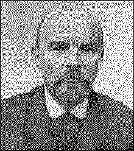

[Communist Party of China]
LONG LIVELENINISM
First Edition
April 1960 |  |
Certain translation and typographical errors in the first and second editions have been corrected in this edition.
[Transcriber's Note: In the printed edition of the following documents, quoted passages of any length appear in the same size type, but are indented as a block. In the following on-line version, these passages are NOT indented as a block, but appear in a smaller point font.-- DJR]
|
LONG LIVE LENINISM!
FORWARD ALONG THE PATH OF THE GREAT LENIN!
UNITE UNDER LENIN's REVOLUTIONARY BANNER! |
|
page 1
In Commemoration of the 90th Anniversary of
April 22 of this year is the 90th anniversary of the birth of Lenin.
1871, the year after Lenin's birth, saw the heroic uprising of the Paris Commune. The Paris Commune was a great, epoch-making revolution, the first dress rehearsal of worldwide significance in the proletariat's attempt to overthrow the capitalist system. When the Commune was on the verge of defeat as a result of the counter-revolutionary attack from Versailles, Marx said:
If the Commune should be destroyed, the struggle would only be postponed. The principles of the Commune are eternal and indestructible; they will present themselves again and again until the working class is liberated.[2]
What is the most important principle of the Commune? According to Marx, it is that the working c]ass cannot simply lay hold of the ready-made state machincry, and use it for its
page 2
own purposes. In other words, the proletariat should use revolutionary means to seize state power, smash the military bureaucratic machine of the bourgeoisie and establish the dictatorship of the proletariat to replace the dictatorship of the bourgeoisie. Anyone familiar with the history of the struggle of the proletariat knows that it is precisely this fundamental question which forms the dividing line between Marxists on the one hand and opportunists and revisionists on the other, and that after the death of Marx and Engels it was none other than Lenin who waged a thoroughly uncomomising struggle against the opportunists and revisionists in order to safeguard the principles of the Commune.
The cause in which the Paris Commune did not succeed finally triumphed 46 years later in the Great October Revolution under Lenin's direct leadership. The experience of the Russian Soviets was a continuation and development of the experience of the Paris Commune. The principles of the Commune continually expounded by Marx and Engels and enriched by Lenin in the light of the new experience of the Russian revolution, first became a living reality on one-sixth of the earth. Marx was perfectly correct in saying that the principles of the Commune are eternal and indestructible.
In their attempt to strangle the new-born Soviet state, the imperialist jackals, acting in league with the counter-revolutionary forces in Russia at the time, carried out armed intervention against it. But the heroic Russian working class and the people of the various nationalities of the Soviet Union drove off the foreign bandits, put down the counter-revolutionary rebellion at home and thus consolidated the world's first great socialist republic.
Under the banner of Lenin, under the banner of the October Revolution, a new world revolution began, with the prole tarian revolution playing the leading role, and a new era dawned in human history.
Throughout the October Revolution, the voice of Lenin quickly resounded throughout the world. The Chinese people's anti-
page 3
imperialist, anti-feudal May 4 Movement in 1919, as Comrade Mao Tse-tung put it, "came into being at the call of the world revolution of that time, of the Russian revolution and of Lenin."[1]
Lenin's call is powerful because it is correct. Under the historical conditions of the epoch of imperialism, Lenin revealed a series of irrefutable truths concerning the proletarian revolution and the dictatorship of the proletariat.
Lenin pointed out that the oligarchy of finance capital in a small number of capitalist powers, that is, the imperialists, not only exploit the masses of people in their own countries, but oppress and plunder the whole world, turning most countries into their colonies and dependencies. Imperialist war is a continuation of imperialist politics. World wars are started by the imperialists because of their insatiable greed in scrambling for world markets, sources of raw materials and fields for investment, and because of their struggle to re-divide the world. So long as capitalist-imperialism exists in the world, the source and possibility of war will remain. The proletariat should guide the masses of people to understand the source of war and to struggle for peace and against imperialism.
Lenin asserted that imperialism is monopolistic, parasitic or decaying, moribund capitalism, that it is the final stage in the development of capitalism and therefore is the eve of the proletarian revolution. The emancipation of the proletariat can be arrived at only by way of revolution, and certainly not by way of reformism. The liberation movements of the proletariat in the capitalist countries should ally themselves with the national liberation movements in the colonies and dependent countries; this alliance can smash the alliance of the imperialists with the feudal and comprador reactionary forces in the colonies all dependent countries,
page 4
and will therefore inevitably put a final end to the imperialist system throughout the world.
In the light of the law of the uneven economic and political development of capitalism, Lenin came to the conclusion that, because capitalism developed extremely unevenly in different countries, socialism would achieve victory first in one or several countries but could not achieve victory simultaneously in all countries. Therefore, in spite of the victory of socialism in one or several countries, other capitalist countries still exist, and this gives rise not only to friction but also to imperialist subversive activities against the socialist states. Hence the struggle will be protracted. The struggle between socialism and capitalism will embrace a whole historical epoch. The socialist countries should maintain constant vigilance against the danger of imperialist attack and do their best to avert this danger.
The fundamental question of all revolutions is the question of state power. Lenin discussed in a comprehensive and penetrating way the fundamental question of the proletarian revolution, that is, the question of thc dictatorship of the proletariat. The dictatorship of the prolelariat, established by smashing the state machine of the bourgeois dictatorship by revolutionary means, is an alliance of a special type between the proletariat on the one hand and the peasantry and all other working people on the other; it is a continuation of the class struggle in another form under new conditions; it involves a persistent struggle, both sanguinary and bloodless, violent and peaceful, military and economic, educational and administrative, against the resistance of the exploiting classes, against foreign aggression and against the forces and traditions of the old society. Without the dictatorship of the proletariat, without its full mobilizalion of the working people on these fronts to wage these unavoidable struggles stubbornly and persistently, there can be no socialism, nor can there be any victory for socialism.
page 5
Lenin considered it of prime importance for the proletariat to establish its own genuinely revolutionary political party which completely breaks with opportunism, that is, a Communist Party, if the proletarian revolution is to be carried through and the dictatorship of the proletariat established and consolidated. This political party is armed with the Marxist theory of dialectical materialism and historical materialism. Its programme is to organize the proletariat and all oppressed working people to carry on class struggle, to set up proletarian rule and passing through socialism to reach the final goal of communism. This political party must identify itself with the masses and attach great importance to their creative initiative in the making of history; it must closely rely on the masses in revolution as well as in socialist and communist construction.
These truths were constantly set forth by Lenin before and after the October Revolution. The world reactionaries and philistines of the time thought these truths revealed by Lenin terrifying. But we see these truths winning victory after victory in the actual life of the world.
In the forty years and more since the October Revolution, tremendous new changes have taken place in the world.
Through its great achievements in socialist and communist construction, the Soviet Union has transformed itself from an economically and technically very backward country in the days of tsarist Russia into a country with the best and most advanced technology in the world. By its economic and technological leaps the Soviet Union has left the European capitalist countries far behind and left the United States behind, too, in technology.
The great victory of the anti-fascist war, in which the Soviet Union was the main force, broke the chain of impelialism in
page 6
Central and Eastern Europe. The great victory of the Chinese people's revolution broke the chain of impelialism on the Chinese mainland. A group of new socialist countries was born. The whole socialist camp headed by the Soviet Union has one quarter of the earth's land space and over one-third of the world's population. The socialist camp has now become an independent world economic system, standing opposed to the capitalist world economic system. The gross industrial output value of the socialist countries now accounts for nearly 40 per cent of the world's total, and it will not be long before it surpasses the gross industrial output value of all the capitalist countries put together.
The imperialist colonial system has been and is disintegrating. The struggle naturally has its twists and turns, but on the whole the storm of the national liberation movement is sweeping over Asia, Africa and Latin America on a daily broadening scale. Things are developing towards their opposites: there the imperialists are going step by step from strength to weakness, while the people are going step by step from weakness to strength.
The relalive stability of capitalism, which existed for a time after World War I, ended long ago. With the formation of the socialist world economic system after World War II, the capitalist world market has greatly shrunk. The contradiction between the productive forces and relations of production in capitalist society has sharpened. The periodic economic crises of capitalism no longer occur as before once every ten years or so, but come almost every three or four years. Recently, some representatives of the U.S. bourgeoisie have admitted that the United States has suffered three "economic recessions" in ten years, and they now have premonitions of a new "economic recession" just after it has pulled through the one in 1957-58. The shortening of the interval between capitalist economic crises is a new phenomenon. It is a further sign that the world capitalist system is drawing nearer and nearer to its inevitable doom.
page 7
The unevenness in the development of the capitalist countries is worse than ever before. With the imperialists squeezed into their ever-shrinking domain, U.S. imperialism is constantly grabbing markets and spheres of influence away from the British, French and other imperialists. The imperialist countries headed by the United States have been expanding armaments and making war preparations for more than ten years, while West German and Japanese militarism, defeated in World War II, have risen again with the help of their former enemy -- the U.S. imperialists. Imperialist West Germany and Japan have come out to join in the scramble for the capitalist world market, are now blabbing once again about their "traditional friendship" and are engaging in new activities for a so-called "Bonn-Tokyo axis with Washington as the starting point." West German imperialism is looking brazenly around for military bases abroad. This aggravates the bitter conflicts within imperialism and at the same time heightens the threat to the socialist camp and all peace-loving countries. The present situation is very much like that after World War I when the U.S. and British imperialists fostered the resurgence of German militarism, and the outcome will again be their "picking up a rock only to drop it on their own feet." The U.S. imperialists' creation of world tension after World War II is a sign not of their strength but of their weakness and precisely reflects the unprecedented instability of the capitalist system.
The U.S. imperialists, in order to realize their ambition for world domination, not only avidly resort to all kinds of sabotage and subversion against the socialist countries, but also, under the pretext of opposing "the communist menace," in their self-appointed role of world gendarme for suppressing the revolution in various countries, set up their military bases all around the world, seize the intermediate areas and carry out military provocations. Like a rat running across the street while everyone shouts "Throw something at it!" the U.S. imperialists run into bumps and bruises everywhere and, contrary to their
page 8
intentions, everywhere arouse a new upsurge of the people's revolutionary struggle. Now, even they themselves are becoming aware that, in contrast with the growing prosperity of the socialist world headed by the Soviet Union, "the influence of the United States as a world power is declining." In their country, one "can only see the decline and fall of ancient Rome."
The changes that have taken place in the world in the past forty years and more indicate that imperialism is rotting with each passing day while with socialism things are getting better and better. It is a great, new epoch that we are facing, and its main characteristic is that the forces of socialism have surpassed those of imperialism, and that the forces of the awakening peoples of the world have surpassed those of reaction.
The present world situation has obviously undergone tremendous changes since Lenin's lifetime; but all these changes, far from proving that Leninism is obsolete, have more and more clearly confirmed the truths revealed by Lenin and all the theories he advanced during the struggle to defend revolutionary Marxism and develop Marxism.
In the historical conditions of the epoch of imperialism and proletarian revolution, Lenin carried Marxism forward to a new stage and showed all the oppressed classes and peoples the path along which they could really shake off capitalist imperialist enslavement and poverty.
These forty years have been forty years of victory for Leninism in the world, forty years in which Leninism has found its way ever deeper into the hearts of the world's people. Leninism not only has won and will continue to win great victories in countries where the socialist system has been established, but is also constantly achieving new victories in the struggles of all oppressed peoples.
The victory of Leninism is acclaimed by the people of the whole world, and at the same time cannot but incur the enmity of the imperialists and all reactionaries. The im-
page 9
perialists, to weaken the influence of Leninism and paralyse the revolutionary will of the masses, have launched the most barbarous and despicable attacks and slanders against Leninism, and, moreover, bought up and utilized the vacillators and renegades within the workers' movement, directing them to distort and emasculate the teachings of Lenin. At the end of the nineteenth century when Marxism was putting various anti-Marxist trends to rout, spreading widely throughout the workers' movement and gaining a predominant position, the revisionists represented by Bernstein advanced their revisions of the teachings of Marx to meet the needs of the bourgeoisie. Now, when Leninism has won great victories in guiding the working class and all oppressed classes and nations of the world in onslaughts against imperialism and all kinds of reactionaries, the modern revisionists represented by Tito have advanced their revisions of the teachings of Lenin (that is, modern Marxist teachings), to meet the needs of the imperialists. As pointed out in the Declaration of the meeting of representatives of the Communist and Workers' Parties of the socialist countries held in Moscow in November 1957, "The existence of bourgeois influence is an internal source of revisionism, while surrender to imperialist pressure is its external source." While the old revisionism attempted to prove that Marxism was outmoded, modern revisionism attempts to prove that Leninism is outmoded. The Moscow Declaration said:
Modern revisionism seeks to smear the great teaching of Marxism-Leninism, declares that it is "outmoded" and alleges that it has lost its significance for social progress. The revisionists try to kill the revolutionary spirit of Marxism, to undermine faith in socialism among the working class and the working people in general.
This passage of the Declaration has put it correctly; such is exactly the situation.
page 10
Are the teachings of Marxism-Leninism now "outmoded"? Does the integrated whole of Lenin's teachings on imperialism, on proletarian revolution and the dictatorship of the proletariat, on war and peace, and on the building of socialism and communism still retain its full vitality? If it is still valid and does retain its full vitality, does this refer only to a certain portion of it or to the whole? We usually say that Leninism is Marxism of the epoch of imperialism and proletarian revolution, Marxism of the epoch of the victory of socialism and communism. Does this statement remain correct? Can it be said that Lenin's original conclusions and our usual conception of Leninism have lost their validity and correctness, and that therefore we should turn back and accept those revisionist and opportunist conclusions which Lenin long ago smashed to smithereens and which have long since gone disgracefully bankrupt in actual life? These questions now confront us and must be answered. Marxist-Leninists must thoroughly expose the absurdities of the imperialists and modern revisionists on these questions, eradicate their influence among the masses, awaken those they have temporarily hoodwinked and further arouse the revolutionary will of the masses.
The U.S. imperialists, the open representatives of the bourgeoisie in many countries, the modern revisionists represented by the Tito clique, and the right-wing social-democrats, in order to mislead the people of the world, do all they can to paint an utterly distorted picture of the contemporaly world situation in an attempt to confirm their ravings that "Marxism is outmoded," and that "Leninism is outmoded too."
A speech by Tito at the end of last year referred repeatedly to what the modern revisionists call the "new epoch." He said, "Today the world has entered an epoch in which nations
page 11
can relax and tranquilly devote themselves to their internal construction tasks." Then he added, "We have entered an epoch when new questions are on the ugenda, not questions of war and peace but questions of co-operation, economic and otherwise, and when economic co-operation is concerned, there is also the question of economic competition."[1] This renegade completely writes off the question of class contradictions and the class struggle in the world, in an attempt to negate the consislent interpretation of Marxist-Leninists that our epoch is the epoch of imperialism and proletarian revolution, the epoch of the victory of socialism and communism.
But how do things really stand in the world?
Can the exploited and oppressed people in the imperialist countries "relax"? Can the peoples of all the colonies and semi-colonies still under imperialist oppression "relax"?
Has the armed intervention led by the U.S. imperialists in Asia, Africa and Latin America become "tranquil"? Is there "tranquillity" in our Taiwan Straits when the U.S. imperialists are still occupying our country's Taiwan? Is there "tranquillity" on the African continent when the people of Algeria and many other parts of Africa are subjected to armed repressions by the French, British and other imperialists? Is there "tranquillity" in Latin America when the U.S. imperialists are trying to wreck the people's revolution in Cuba by means of bombing, assassination and subversion?
What kind of "construction" is meant by saying "(nations) devote themselves to their internal construction tasks"? Everyone knows that there are different types of countries in the world today, and principally two types of countries with social systems fundamentally different in nature. One type belongs to the socialist world system, the other to the capitalist world system. Is Tito referring to the "internal construction" of armament expansion which the imperialists are carrying
page 12
out in order to oppress the peoples of their own countries and oppress the whole world, or to the "internal construction" carried out by socialism for the promotion of the people's happiness and in the pursuit of lasting world peace?
Is the question of war and peace no longer an issue? Is it that imperialism no longer exists, the system of exploitation no longer exists, and therefore the question of war no longer exists? Or is it that there can be no question of war even if imperialism and the system of exploitation are allowed to survive for ever? The fact is that since World Was II there has been continuous and unbroken warfare. Do not the imperialist wars to suppress national liberation movements and the imperialist wars of armed intervention against revolutions in various countries count as wars? Even though these local wars do not develop into world wars, do they not still count as wars? Even though they are not fought with nuclear weapons, do wars using what are called conventional weapons not still count as wars? Does not the U.S. imperialists' allocation of nearly 60 per cent of their 1960 budget outlay to arms expansion and war preparations count as a bellicose policy on the part of U.S. imperialism? Will the revival of West German and Japanese militarism not confront mankind with the danger of a new world war?
What kind of "co-operation" is meant? Is it "co-operation" of the proletariat with the bourgeoisie to protect capitalism? Is it "co-operation" of the peoples in the colonies and semi-colonies with the imperialists to protect colonialism? Is it "co-operation" of socialist countries with capitalist countries to protect the imperialist system in its oppression of the peoples in the capitalist countries and its suppression of national liberation wars?
In a word, the assertions of the modern revisionists about the so-called "epoch" challenge Leninism on the foregoing issues. It is their aim to obliterate the contradiction between the masses of people and the monopoly capitalist class in the imperialist countries, the contradiction between the peoples in
page 13
the colonies and semi-colonies and the imperialist aggressors, the contradiction between the socialist system and the imperialist system, and the contradiction between the peace-loving people of the world and the warlike imperialist bloc.
There have been various ways of defining the distinctions between different "epochs." Generally speaking there is one way which is merely drivel, concocting and playing around with vague, ambiguous phrases to cover up the essence of the epoch. This is the old trick of the imperialists, the bourgeoisie and the revisionists in the workers' movement. Then there is another way, which is to make a concrete analysis of the specific circumstances with regard to the overall situation of class contradictions and class struggle, put forward strict scientific definitions, and thus bring the essence of each epoch into full light. This is what every serious-minded Marxist does.
On the features that distinguish an epoch, Lenin said:
. . . We are speaking here of big historical epochs; in every epoch there are, and there will be, separate, partial movements sometimes forward, at other times backwards, there are, and there will be, various deviations from the average type and average tempo of the movements.
We cannot know how fast and how successfully certain historical movements of the given epoch will develop. But we can and do know which class occupies a central position in this or that epoch and determines its main content, the main direction of its development, the main characteristics of the historical situation in the given epoch, etc.
Only on this basis, i.e., by taking into consideration first and foremost the fundamental distinctive features of different "epochs" (and not of individual episodes in the history of different countries) can we correctly work out our tactics. . . .[1]
page 14
An epoch, as referred to here by Lenin, presents the question of which class holds the central position in it and determines its main content and the main direction of its development.
Faithful to Marx's dialectics, Lenin never for a single moment departed from the standpoint of analysing class relations. He held that: "Marxism judges 'interests' by the class antagonisms and the class struggles which manifest themselves in millions of facts of everyday life."[1] He stated:
The method of Marx consists first or all, in taking into consideration the objective content of the historical process at the given concrete moment, in the given concrete situation, in order to understand first of all which class it is whose movement constitutes the mainspring of possible progress in this concrete situation. . . .[2]
Lenin always demanded that we examine the concrete process of historical development on the basis of class analysis, instead of talking vaguely about "society in general" or "progress in general." We Marxists must not base proletarian policy merely on certain passing events or minute political changes, but on the overall situation of the class contradictions and class struggle of a whole historical epoch. This is a basic theoretical position of Marxists. It was by taking a firm stand on this position that Lenin, in the new period of class changes, in the new historical period, came to the conclusion that the hope of humanity lies entirely in the victory of the proletariat and that the proletariat must prepare itself to win victory in this great revolutionary battle and thus establish the dictatorship of the proletariat. After the October Revolution, at the Seventh Congress of the Russian Communist Party (Bolsheviks) in 1918, Lenin stated:
page 15
We must begin with the general basis of the development of commodity production, the transition to capitalism and the transformation of capitalism into imperialism. Thereby we shall be theoretically taking up and consolidating a position from which nobody who has not betrayed socialism will dislodge us. From this follows an equally inevitable conclusion: the era of social revolution is beginning.
This is Lenin's conclusion, a conclusion which up to the present still requires deep consideration by all Marxists.
The formulation of revolutionary Marxists that ours is the epoch of imperialism and proletarian revolution, the epoch of the victory of socialism and communism is irrefutable, because it grasps with complete correctness the basic features of our present great epoch. The formulation that Leninism is the continuation and development of revolutionary Marxism in this great epoch and that it is the theory and policy of the proletarian revolution and the dictatorship of the proletariat is also irrefulable, because it is precisely Leninism that exposes the contradictions in our great epoch -- the contradiction between the working class and monopoly capital, the contradiction among the imperialist countries, the contradiction between peoples in the colonies and semi-colonies and imperialism, and the contradiction between the socialist countries, where the proletariat has triumphed, and the imperialist countries. Leninism has, therefore, become our banner of victory. Contrary, however, to this series of revolutionary Marxist formulations, in what the Titos call the "new epoch," there is actually no imperialism, no proletarian revolution and, needless to say, no theory and policy of the proletarian revolution and the dictatorship of the proletariat. In short, with them, the fundamental focal points of the class contradictions and class struggles of our epoch are nowhere to be seen, the fundamental questions of Leninism are missing and Leninism is missing.
page 16
The modern revisionists claim that in what they call the "new epoch,' because of the progress of science and technology, the "old conceptions" advanced by Marx and Lenin no longer apply. Tito said: "We are not dogmatists, for Marx and Lenin did not predict the rocket on the moon, atomic bombs and the great technical progress."[1] Not dogmatists, that's fine. Who want them to be dogmatists? But one may oppose dogmatism in the interests of Marxism-Leninism or one may actually oppose Marxism-Leninism in the name of opposing dogmatism. The Titos belong to the latter category. On the question of what effect scientific and technological progress has on social development, there are people who hold incorrect views because they are not able to approach the question from the viewpoint of the materialist conception of history. This is understandable. But the modern revisionists, on the other hand, are deliberately creating confusion on this question in a vain attempt to make use of the progress in science and technology to throw Marxism-Leninism to the winds.
In the past few years, the achievements of the Soviet Union in science and technology have been foremost in the world. These Soviet achievements are products of the Great October Revolution. These outstanding achievements mark a new era in man's conquest of nature; and at the same time they have played a very important role in defending world peace. But, in the new conditions brought about by the development of modern technology, has the ideological system of Marxism-Leninism been shaken, as Tito says, by the "rocket on the moon, atomic bombs and the great technical progress" which Marx and Lenin "did not predict"? Can it be said that the Marxist-Leninist world outlook, social-historical outlook, moral outlook and other basic conceptions have therefore become so-called stale "dogmas" and that the law of class struggle henceforth no longer holds good?
page 17
Marx and Lenin did not live to the present day, and of course could not see the specific details of technological progress in the present-day world. But what, after all, does the development of natural science and the advance of technology augur for the capitalist system? Marx and Lenin held that this could only augur a new social revolution, and certainly not the fading away of social revolution.
We know that both Marx and Lenin rejoiced in the new discoveries and progress of natural science and technology in the conquest of nature. Engels said in his "Speech at the Graveside of Karl Marx":
Science was for Marx a historically dynamic, revolutionary force. However great the joy with which he welcomed a new discovery in some theoretical science whose practical application perhaps it was as yet quite impossible to envisage, he experienced quite another kind of joy when the discovery involved immediate revolutionary changes in industry, and in historical development in general.
Engels added: "For Marx was before all else a revolutionist." Well said! Marx always regarded all new discoveries in the conquest of nature from the viewpoint of a proletarian revolutionist, not from the viewpoint of one who holds that the proletarian revolution will fade away.
Wilhelm Liebknecht wrote in Reminiscences of Marx :
Marx made fun of the victorious European reaction which imagined that it had stifled the revolution and did not suspect that natural science was preparing a new revolution. King Steam, who had revolutionized the world in the previous century, was coming to the end of his reign and another incomparably greater revolutionary would take his place, the electric spark.
. . . The consequences are unpredictable. The economic revolution must be followed by a political one, for the latter is only the expression of the former.
page 18
In the manner in which Marx discussed this progress of science and mechanics, his conception of the world, and especially what has been termed the materialist conception of history, was so clearly expressed that certain doubts which I had hitherto still maintained melted away like snow in the sunshine of spring.
This is how Marx felt the breath of revolution in the progress of science and technology. He held that the new progress of science and technology would lead to a social revolution to overthrow the capitalist system. In Marx's opinion, the progress of natural science and technology further strengthens the position of the entire Marxist conception of the world and the materialist conception of history, and certainly does not shake it. The progress of natural science and technology further strengthens the position of the proletarian revolution and of the oppressed nations in their fight against imperialism, and certainly does not weaken it.
Like Marx, Lenin also viewed technological progress in connection with the question of revolution in the social system. Thus Lenin held that "the age of steam is the age of the bourgeoisie, the age of electricity is the age of socialism."[1]
Please note the contrast between the revolutionary spirit of Marx and Lenin and the modern revisionists' shameful attitude of betraying the revolution!
In class society, in the epoch of imperialism, Marxist-Leninists can only approach the question of the development and use of technology from the viewpoint of class analysis.
Inasmuch as the socialist system is progressive and represents the interests of the people, the socialist countries seek to utilize such new techniques as atomic energy and rocketry to serve peaceful domestic construction and the conquest of nature. The more the socialist countries master such new techniques and the more rapidly they develop them, the
page 19
better will they attain the aim of high-speed development of the social productive forces to meet the needs of the people, and the more will they strengthen the forces for checking imperialist war and increase the possibility of defending world peace. Therefore, for the welfare of their peoples and in the interest of peace for people the world over, the socialist countries should, wherever possible, master more and more of such new techniques serving the well-being of the people.
At the present time, the socialist Soviet Union clearly holds the upper hand in the development of new techniques. Everybody knows that the rocket that hit the moon was launched by the Soviet Union and not by the United States, the country where capitalism is most developed. This shows that only in the socialist countries can there be unlimited prospects for the large-scale development of new techniques.
On the contrary, inasmuch as the imperialist system is reactionary and against the people, the imperialist countries seek to use such new techniques for military purposes of aggression against foreign countries and intimidation against their own people, for making lethal weapons. To the imperialist countries, the emergence of such new techniques only means pushing to a new stage the contradiction between the development of the social productive forces and the capitalist relations of production. What this will bring about is not by any means the perpetuation of capitalism but the further rousing of the revolution of the people in those countries and the destruction of the old, criminal, cannibalistic system of capitalism.
The U.S. imperialists and their partners use weapons like atom bombs to threaten war and blackmail the whole world. They declare that anyone who does not submit to the domination of U.S. imperialism will be destroyed. The Tito clique echoes this line; it takes up the U.S. imperialist refrain to spread terror of atomic warfare among the masses. U.S. imperialist blackmail and the chiming in of the Tito clique can only temporarily dupe those who do not understand the real situation, but cannot cow the people who have awakened. Even
page 20
those who for the time being do not understand the real situation will gradually come to understand it with the help of the advanced elements.
Marxist-Leninists have always maintained that in world history it is not technique but man, the masses of people, that determine the fate of mankind. There was a theory current for a time among some people in China before and during the War of Resistance to Japanese Aggression, which was known as the theory of "weapons decide everything"; from this theory they concluded that since Japan's weapons were new and its techniques advanced while China's weapons were old and its techniques backward, "China would inevitably be subjugated." Comrade Mao Tse-tung in his work On the Protracted War published at that time refuted such nonsense. He made the following analysis: The Japanese imperialists' war of aggression against China was bound to fail because it was reactionary, unjust, and being unjust lacked popular support; the Chinese people's war of resistance against Japan would certainly win because it was progressive, just, and being just enjoyed abundant support. Comrade Mao Tse-tung pointed out that the most abundant source of strength in war lay in the masses, and that a people's army organized by awakened and united masses of people would be invincible throughout the world. This is a Marxist-Leninist thesis. And what was the outcome? The outcome was that the Marxist-Leninist thesis triumphed and the "theory of national subjugation" ended in defeat. After World War II, the triumph of the Korean and Chinese peoples in the Korean war over the U.S. aggressors far superior in weapons and equipment once again bore out this Marxist-Leninist thesis.
An awakened people will always find new ways to counteract the reactionaries' superiority in arms and win victory for themselves. This was so in past history, it is so at present, and it will remain so in the future. As a result of the supremacy gained by the socialist Soviet Union in military techniques, and the loss of their monopoly of atomic and nuclear
page 21
weapons by the U.S. imperialists, and as a result of the awakening of the people the world over and of the people in the United States itself, there is now in the world the possibility of concluding an agreement on the banning of atomic and nuclear weapons. We are striving for the conclusion of such an agreement. In contrast to the bellicose imperialists, the socialist countries and peace-loving people the world over actively and firmly stand for the banning and destruction of atomic and nuclear weapons. We are always struggling against imperialist war, for the banning of atomic and nuclear weapons and for the defence of world peace. The more broadly and intensively this struggle is waged and the more fully and thoroughly the brutish faces of the bellicose U.S. and other imperialists are exposed the more will we be able to isolate these imperialists before the people of the world, the greater will be the possibility of tying their hands and the more will it benefit the cause of world peace. If, on the contrary, we lose our vigilance against the danger of the imperialists launching a war, do not strive to arouse the people of all countries to oppose imperialism but tie the hands of the people, then imperialism can prepare for war just as it pleases and the inevitable result will be an increase in the danger of the imperialists launching a war and, once war breaks out, the people may not be able quickly to adopt a correct attitude towards it because of complete lack of preparation or inadequate preparation, thus being unable to effectively check the war. Of course, whether or not the imperialists will unleash a war is not determined by us; we are, after all, not their chief-of-staff. As long as the people of all countries enhance their awareness and are fully prepared, with the socialist camp also possessing modern weapons, it is certain that if the U.S. or other imperialists refuse to reach an agreement on the banning of atomic and nuclear weapons and should dare to fly in the face of the will of all the peoples by launching a war using atomic and nuclear weapons, the result will only be the very speedy destruction of these monsters themselves
page 22
encircled by the peoples of the world, and certainly not the so-called annihilation of mankind. We consistently oppose the launching of criminal wars by imperialism, because imperialist war would impose enormous sacrifices upon the peoples of various countries (including the peoples of the United States and other imperialist countries). But should the imperialists impose such sacrifices on the peoples of various countries, we believe that, just as the experience of the Russian revolutiom and the Chinese revolution shows, those sacrifices would be rewarded. On the debris of imperialism, the victorious people would create very swiftly a civilization thousands of times higher than the capitalist system and a truly beautiful future for themselves.
The conclusion can only be this: whichever way you look at it, none of the new techniques like atomic energy, rocketry and so on has changed, as alleged by the modern revisionists, the basic characteristics of the epoch of imperialism and proletarian revolution pointed out by Lenin. The capitalist-imperialist system definitely will not crumble of itself. It will be overthrown by the proletarian revolution within the imperialist country concerned, and the national revolution in the colonies and semi-colonies. Contemporary technological progress cannot save the capitalist-imperialist system from its doom but only rings a new death knell for it.
The modern revisionists, proceeding from their absurd arguments on the current world situation and from their absurd argument that the Marxist-Leninist theory of class analysis and class struggle is obsolete, attempt to totally overthrow the fundamental theories of Marxism-Leninism on a series of questions like violence, war, peaceful co-existence, etc.
There are also some people who are not revisionists, but well-intentioned persons who sincerely want to be Marxists,
page 23
but get confused in the face of certain new historical phenomena and thus have some incorrect ideas. For example, some of them say that the failure of the U.S. imperialists' policy of atomic blackmail marks the end of violence. While thoroughly refuting the absurdities of the modern revisionists, we should also help these well-intentioned people to correct their erroneous ideas.
What is violence? Lenin said a great deal on this question in his book The State and Revolution. The emergence and existence of the state is in itself a kind of violence. Lenin introduced the following elucidation by Engels:
. . . It (this public power) consists not merely of armed men, but of material appendages, prisons and coercive institutions of all kinds. . . .
Lenin tells us that we must draw a distinction between two types of states different in nature, the state of bourgeois dictatorship and the state of proletarian dictatorship, and between two types of violence different in nature, counter-revolutionary violence and revolutionary violence; as long as there is counter-revolutionary violence, there is bound to be revolutionary violence to oppose it. It would be impossible to wipe out counter-revolutionary violence without revolutionary violence. The state in which the exploiting classes are in power is counter-revolutionary violence, a special force for suppressing the exploited classes in the interest of the exploiting classes. Both before the imperialists had atomic bombs and rocket weapons, and since they have had these new weapons, the imperialist state has always been a special force for suppressing the proletariat at home and the people of its colonies and semi-colonies abroad, has always been such an institution of violence; even if the imperialists are compelled not to use these new weapons, the imperialist state will of course still remain an imperialist institution of violence until it is overthrown and replaced by the people's state, the state of the dictatorship of the proletariat of that country.
page 24
Never since the dawn of history have there been such large-scale, such utterly brutal forces of violence as those created by the present-day capitalist-imperialists. Throughout the past ten years and more, the U.S. imperialists have, without any scruples, adopted means of persecution a hundred times more savage than before, trampling upon the outstanding sons
of the country's working class, upon the Negro people, upon all progressives; and moreover, they have all along been declaring brazenly that they intend to put the whole world under their rule of violence. They are continuously expanding their forces of violence, and at the same time the other imperialists are also taking part in the race to strengthen their forces of violence.
The bloated military build-up of the imperialist countries headed by the United States has appeared during the unprecedentedly grave general crisis of capitalism. The more frantically the imperialists carry the expansion of their military strength to a peak, the more it signifies that they are drawing near to their own doom. Now even some representatives of the U.S. imperialists have premonitions of the inevitable extinction of the capitalist system. But will the imperialists themselves put an end to their violence and will those in power in the imperialist countries abandon of their own accord the violence they have set up, just because imperialism is drawing near to its doom?
Can it be said that, compared with the past, the imperialists are no longer addicted to violence, or that there has been a lessening in the degree of their addiction?
Lenin answered such questions on many occasions long ago. He pointed out in his book Imperialism, the Highest Stage of Capitalism : ". . . For politically imperialism is always a striving towards violence and reaction." After the October Revolution, in his book The Proletarian Revolution and the Renegade Kautsky he made a special point of recounting history, comparing the differences between pre-monopoly capitalism and monopoly capitalism, i.e., imperialism. He said:
page 25
. . . Pre-monopoly capitalism, which reached its zenith in the seventies of the nineteenth century, was, by virtue of its fundamental economic traits (which were most typical in England and America) distinguished by its relative attachment to peace and freedom. Imperialism, i.e., monopoly capitalism, which finally matured only in the twentieth century, is, by virtue of its fundamental economic traits, distinguished by the least attachment to peace and freedom, and by the greatest and universal development of militarism everywhere.
Of course, these words of Lenin were said in the early period of the October Revolution, when the proletarian state was newly born, and its economic forces still young and weak, while with the lapse of forty years and more, the face of the Soviet state itself, and of the whole world has undergone a tremendous change, as we have already described. Then, can it be said that the nature of imperialism has changed because of the might of the Soviet Union, the might of the forces of socialism and the might of the forces of peace, and that, as a result, the foregoing theses of Lenin have become obsolete? Or, can it be said that imperialism will no longer resort to violence although its nature has not changed? Do these views conform to the real situation?
The socialist world system has obviously gained the upper hand in its struggle with the capitalist world system. This great historic fact has weakened the position of imperialist violence in the world. But will this fact cause the imperialists never again to oppress the people of their own countries, never again engage in external expansion and aggressive activities? Can it make the warlike circles of the imperialists from now on "lay down the butcher's cleaver" and "sell swords to buy oxen"? Can it make the groups of munitions makers and dealers in the imperialist countries henceforth change over to peaceful pursuits?
page 26
All these questions confront every serious Marxist-Leninist, and require deep consideration. It is obvious that whether these questions are viewed and handled correctly or not has a close bearing on the success or failure of the proletarian cause and the destiny of humanity.
War is the most acute form of expression of violence. One type is civil war, another is foreign war. Violence is not always expressed by war, its most acute form. In capitalist countries, bourgeois war is the continuation of the bourgeois politics of ordinary times, while bourgeois peace is the continuation of bourgeois wartime politics. The bourgeoisie always alternately adopt the two forms, war and peace, to carry on their rule over the people and their external struggles. In what is called peace time, the imperialists rely on armed force to deal with the oppressed classes and nations by such forms of violence as arrest, imprisonment, hard labour, massacre and so forth, while at the same time, they are also prepared to use the most acute form of violence -- war -- to suppress the revolution of the people at home, to carry out plunder abroad, to overwhelm foreign competitors and to stamp out revolutions in other countries. Or, peace at home may exist side by side with war abroad.
In the initial period of the October Revolution, the imperialists resorted to violence in the form of war against the Soviet Union, which was a continuation of their imperialist politics; in World War II, the German imperialists used violence in the form of large-scale war to attack the Soviet Union, which was a continuation of their imperialist politics. But on the other hand, the imperialists also established diplomatic relations of peaceful co-existence with the Soviet Union in different periods, which was also, of course, a continuation of imperialist politics in another form under specific conditions.
True, some new questions have now arisen concerning peaceful coexistence. Confronted with the powerful Soviet Union and the powerful socialist camp, the imperialists must at any rate carefully consider whether, contrary to their
page 27
wishes, they would hasten their own extinction, as Hitler did, or bring about the most serious consequences for the capitalist system itself, if they should attack the Soviet Union and the other socialist countries.
"Peaceful co-existence" -- this is a new concept which arose only after the emergence of the socialist state in the world following the October Revolution. It is a new concept formed under the circumstances Lenin had predicted before the October Revolution, when he said:
Socialism cannot achieve victory simultaneously in all countries. It will achieve victory first in one or several countries, while the others will remain bourgeois or pre-bourgeois for some time.[1]
This new concept is one advanced by Lenin after the great Soviet people defeated the imperialist armed intervention. As was pointed out above, at the outset the imperialists were not willing to co-exist peacefully with the Soviet Union. The imperialists were compelled to "co-exist" with the Soviet Union only after the war of intervention against the Soviet Union had failed, after there had been several years of actual trial of strength, after the Soviet state had planted its feet firmly on the ground, and after a certain balance of power had taken shape between the Soviet state and the imperialist countries. Lenin said in 1920:
We have won conditions for ourselves under which we can exist alongside the capitalist powers, which are now forced to enter into trade relations with us.[2]
It can be seen that the peaceful co-existence for a certain period between the world's first socialist state and imperialism was achieved entirely through struggle. Before World War II, the 1920-1940 period prior to Germany's attack on the
page 28
Soviet Union was a period of peaceful coexistence between imperialism and the Soviet Union. During all those twenty years, the Soviet Union kept faith with peaceful co-existence. However, by 1941, Hitler no longer wanted to maintain peaceful co-existence with the Soviet Union; the German imperialists perfidiously launched a savage attack on the Soviet Union. Owing to the victory of the anti-fascist war in which the great Soviet Union was the main force, the world saw once again a situation of peaceful co-existence between the socialist and capitalist countries. Nevertheless, the imperialists have not given up their designs. The U.S. imperialists have set up networks of military bases and guided missile bases everywhere around the Soviet Union and the entire socialist camp. They are still occupying our territory Taiwan and continually carrying out military provocations against us in the Taiwan Straits. They carried out armed intervention in Korea, conducting a large-scale war against the Korean and Chinese peoples on Korean soil, which resulted in an armistice agreement only after their defeat -- and up to now they are still interfering with the reunification of the Korean people. They gave aid in weapons to the French imperialist occupation forces in their war against the Vietnamese people, and up to now they are still interfering with the reunification of the Vietnamese people. They engineered the counter-revolutionary rebellion in Hungary, and up to now they are continually making all sorts of attempts at subversion in the socialist countries in East Europe and elsewhere. The facts are still just as Lenin presented them to a U.S. correspondent in February 1920: on the question of peace, "there is no obstacle on our side. The obstacle is the imperialism of American (and all other) capitalists."[1]
The foreign policy of socialist countries can only be a policy of peace. The socialist system determines that we do not
page 29
need war, absolutely will not start a war, and absolutely must not, should not and cannot occupy one inch of a neighbouring country's territory. Ever since its founding, the People's Republic of China has consistently adhered to a foreign policy of peace. Our country together with two neighbouring countries, India and Burma, jointly initiated the well-known Five Principles of Peaceful Co-existence; and at the Bandung Conference of 1955, our country together with various countries of Asia and Africa adopted the Ten Principles of Peaceful Co-existence. The Communist Party and Government of our country have in the past few years consistently supported the activities for peace carried out by the Central Committee of the Communist Party and the Government of the Soviet Union headed by Comrade N. S. Khrushchov, considering that these activities on the part of the Central Committee of the Communist Party and the Government of the Soviet Union have further demonstrated before the peoples of the world the firmness of the socialist countries' peaceful foreign policy as well as the need for the peoples to prevent the imperialists from launching a new world war and to strive for a lasting world peace.
The Declaration of the Moscow Meeting of 1957 states:
The cause of peace is upheld by the powerful forces of our era: the invincible camp of socialist countries headed by the Soviet Union; the peace-loving countries of Asia and Africa taking an anti-imperialist stand and forming, together with the socialist countries, a broad peace zone; the international working class and above all its vanguard -- the Communist Parties; the liberation movement of the peoples of the colonies and semi-colonies; the mass peace movement of the peoples; the peoples of the European countries who have proclaimed neutrality, the peoples of Latin America and the masses in the imperialist countries themselves are firmly resisting plans for a new war. An alliance of these mighty forces could prevent war. . . .
page 30
So long as these mighty forces are continuously developed, it is possible to maintain the situation of peaceful co-existence, or even to formally reach some sort of agreement on peaceful co-existence, up to and including the conclusion of an agreement on the prohibition of atomic and nuclear weapons. That would be a fine thing in full accord with the aspirations of the peoples of the world. However, even in that case, as long as the imperialist system still exists, war, the most acute form of violence, will not disappear from the world. The fact is not as described by the Yugoslav revisionists, who declare[1] obsolete Lenin's definition that "war is the continuation of politics," a definition which he repeatedly explained and upheld in combating opportunism.
We believe in the absolute correctness of Lenin's thinking: War is an inevitable outcome of the systems of exploitation and the imperialist system is the source of modern wars. Until the imperialist system and the exploiting classes come to an end, wars of one kind or another will still occur. They may be wars among the imperialists for redivision of the world, or wars of aggression and anti-aggression between the imperialists and the oppressed nations, or civil wars of revolution and counter-revolution between the exploited and exploiting classes in the imperialist countries, or, of course, wars in which the imperialists attack the socialist countries and the socialist countries are forced to defend themselves. All kinds of war represent the continuation of the politics of definite classes. Marxist-Leninists absolutely must not sink into the mire of bourgeois pacifism, and can only adopt the method of concrete class analysis to appraise all kinds of war and accordingly draw conclusions on policies to be followed by the proletariat. As Lenin put it in his article The Military Program of the Proletarian Revolution : theoretically, it would be quite
page 31
wrong to forget that every war is but the continuation of politics by other means."
To attain its aim of plunder and oppression, imperialism always has two tactics: the tactics of war and the tactics of "peace"; therefore, the proletariat and the people of all countries must also use two tactics to deal with imperialism: the tactics of exposing imperialism's peace fraud and striving energetically for a genuine world peace, and the tactics of being prepared to use a just war to end the imperialist unjust war if and when imperialism should unleash it.
In a word, in the interests of the peoples of the world, we must thoroughly shatter the falsehoods of the modem revisionists and uphold the Marxist-Leninist viewpoints on the questions of violence, war and peaceful co-existence.
The Yugoslav revisionists deny the inherent class character of violence and thereby obliterate the fundamental difference between revolutionary violence and counter-revolutionary violence; they deny the inherent class character of war and thereby obliterate the fundamental difference between just wars and unjust wars; they deny that imperialist war is a continuation of imperialist politics, deny the danger of imperialism unleashing another world war, deny that only after doing away with the exploiting classes will it be possible to do away with war, and even shamelessly call the chieftain of U.S. imperialism Eisenhower "the man who laid the cornerstone for eliminating the cold war and establishing lasting peace with peaceful competition between different political systems;"[1] they deny that under the conditions of peaceful co-existence there are still complicated, acute struggles in the political, economic and ideological fields, and so on. All these arguments of the Yugoslav revisionists are aimed at poisoning the minds of the proletariat and the people of all countries, and are helpful to the imperialist policy of war.
page 32
The modern revisionists seek to confuse the peaceful foreign policy of the socialist countries with the domestic policy of the proletariat in the capitalist countries. They thus hold that peaceful co-existence of countries with differing social systems means that capitalism can peacefully grow into socialism, that the proletariat in countries ruled by the bourgeoisie can renounce class struggle and enter into "peaceful co-operation" with the bourgeoisie and the imperialists, and that the proletariat and all the exploited classes should forget about the fact that they are living in a class society, and so on. All these arguments are also diametrically opposed to Marxism-Leninism. The aim of the modern revisionists is to protect imperialist rule, and they attempt to hold the proletariat and all the rest of the working people perpetually in capitalist enslavement.
Peaceful co-existence of different countries and people's revolutions in various countries are in themselves two different things, not one and the same thing; two different concepts, not one; two different kinds of question, and not one and the same kind of question.
Peaceful co-existence refers to relations between countries; revolution means the overthrow of the oppressing classes by the oppressed people within each country, while in the case of the colonies and semi-colonies, it is first and foremost a question of overthrowing alien oppressors, namely, the imperialists. Before the October Revolution the question of peaceful co-existence between socialist and capitalist countries simply did not exist in the world, as there were as yet no socialist countries at that time; but there did exist the questions of the proletarian revolution and the national revolution, as the peoples in various countries, in accordance with the specific conditions in their own countries, had long ago put revolutions of one kind or another on the order of the day to determine the destinies of their countries.
page 33
We are Marxist-Leninists. We have always held that revolution is each nation's own affair. We have always maintained that the working class can only depend upon itself for its emancipation, and that the emancipation of the people of any given country depends on their own awakening, and on the ripening of revolution in that country. Revolution can neither be exported nor imported. No one can forbid the people of a foreign country to carry out a revolution, nor can one make a revolution in a foreign country by using the method of "helping the rice shoots to grow by pulling them up."
Lenin put it well when he said in June 1918:
There are people who believe that the revolution can break out in a foreign country to order, by agreement. These people are either mad or they are provocateurs. We have experienced two revolutions during the past twelve years. We know that revolutions cannot be made to order, or by agreement; they break out when tens of millions of people come to the conclusion that it is impossible to live in the old way any longer.[1]
In addition to the experience of the Russian revolution, is not the experience of the Chinese revolution also one of the best proofs of this? We Chinese people, under the leadership of the Chinese Communist Party, have also experienced several revolutions. The imperialists and all the reactionaries, like lunatics, have always asserted that our revolutions were made to order from abroad, or in accordance with agreements. But people all over the world know that our revolutions were not imported from abroad, but were brought about because our people found it impossible to continue to live in the old China and because they wanted to create a new life of their own.
page 34
When a socialist country, in the face of imperialist attack, is compelled to wage a defensive war and launch counter-attacks, is it justified in going beyond its own border to pursue and eliminate its enemies from abroad, as the Soviet Union did in the war against Hitler? Certainly it is completely justified, absolutely necessary and entirely just. In accordance with the strict principles of communists, such operations by the socialist countries must absolutely be limited to the time when imperialism launches a war of aggression against them. Socialist countries never permit themselves to send, never should and never will send their troops across their borders unless they are subjected to aggression from a foreign enemy. Since the armed forces of the socialist countries fight for justice, when these forces have to go beyond their borders to counter-attack a foreign enemy, it is only natural that they should exert an influence and have an effect wherever they go; but even then, the emergence of people's revolutions and the establishment of the socialist system in those places and countries where they go will still have to depend on the will of the masses of the people there.
The spread of revolutionary ideas knows no national boundaries. But it is only through the efforts of the masses of people under the specific circumstances in a given country that these ideas will yield revolutionary fruit. This is not only true in the epoch of proletarian revolution, but also invariably true in the epoch of bourgeois revolution. The bourgeoisie of various countries in the epoch of their revolution took Rousseau's Social Contract as their gospel, while the revolutionary proletariat in various countries take as their gospel Marx's Communist Manifesto and Capital and Lenin's Imperialism, the Highest Stage of Capitalism and The State and Revolution, and so on. Times vary, the classes vary, the ideologies vary and the character of the revolutions varies. But no one can hold back a revolution in any country if there is a desire for that revolution and when the revolutionary crisis there has matured. In the end the socialist system will
page 35
replace the capitalist system. This is an objective law independent of human will. No matter how hard the reactionaries may try to prevent the advance of the wheel of history, revolution will take place sooner or later and will surely triumph. This applies to the replacement of one society by another throughout human history. The slave system was replaced by the feudal system which, in its turn, was replaced by the capitalist system. These, too, follow laws independent of human will. And all these changes were carried out through revolution.
That notorious old revisionist Bernstein once said, "Remember ancient Rome, there was a ruling class that did no work, but lived well, and as a result, this class weakened. Such a class must gradually hand over its power."[1] That the slaveowners as a class "weakened" was a historical fact that Bernstein could not conceal, any more than the present U.S. imperialists can conceal the hard fact of their own steady decline. Yet Bernstein, shameless, self-styled "historian" that he was, chose to cover up the basic fact of ancient Roman history that the slave-owners never "handed over power" of their own accord and that their rule was overthrown by protracted, repeated, continuous slave revolutions.
Revolution means the use of revolutionary violence by the oppressed class, it means revolutionary war. This is true of the slave revolution as well as of the bourgeois revolution. Lenin has put it well:
History teaches us that no oppressed class ever achieved power, nor could achieve power, without going through a period of dictatorship, i.e., the conquest of political power and suppression by force of the most desperate, frenzied resistance always offered by the exploiters. . . . The bourgeoisie . . . came to power in the advanced countries through a series of insurrections, civil wars, the suppression by force
page 36
of kings, feudalists, slave-owners and their attempts at restoration.[1]
Why do things happen this way?
In answering this question, again we have to quote Lenin. In the first place, as Lenin said: "No ruling class in the world ever gave way without a struggle."[2]
Secondly, as Lenin explained: "The reactionary classes themselves are usually the first to resort to violence, to civil war; they are the first to 'place the bayonet on the agenda. . . .'"[3]
In the light of this how shall we conceive of the proletarian socialist revolution?
In order to answer this question we must quote Lenin again. Let us read the following passage by him:
Not a single great revolution in history has ever been carried out without a civil war and no serious Marxist will believe it possible to make the transition from capitalism to socialism without a civil war.[4]
These words of Lenin here explain the question very clearly. And here is another quotation from Lenin:
If socialism had been born peacefully -- but the capitalist gentlemen did not wish to let it be born thus. It is not quite enough to put it this way. Even if there had been no war, the capitalist gentlemen would still have done all they could to prevent such a peaceful development. Great revolutions, even when they began peacefully, like the great French Revolution, have ended in desperate wars which have been started by the counter-revolutionary bourgeoisie.[5]
This is also very clearly put.
page 37
The Great October Revolution is the best material witness to the truth of these propositions of Lenin.
So is the Chinese revolution. No one will ever forget that it was only after going through twenty-two years of bitter civil war that the Chinese people and the Chinese proletariat won nationwide victory and captured state power under the leadership of the Chinese Communist Party.
The history of the proletarian revolution in the West after World War I teaches us: even when the capitalist gentlemen do not exercise direct, open control of state power, but rule through their lackeys -- the treacherous social-democrats, these despicable renegades will surely be ready at any time, in accordance with the dictates of the bourgeoisie, to cover up the violence of the bourgeois White Guards and plunge the proletarian revolutionary fighters into a blood bath. This is just the way it was in Germany at that time. Vanquished, the big German bourgeoisie handed over state power to the social-democrats. The social-democratic government, on coming to power, immediately launched a bloody suppression of the German working class in January 1919. Let us recall how Karl Liebknecht and Rosa Luxemburg, whom Lenin called "outstanding representatives of the world proletarian International" and "the immortal leaders of the international socialist revolution," shed their blood as a result of the violence of the social-democrats of the day. Let us also recall, in Lenin's words, "the vileness and shamelessness of these murders"[1] perpetrated by these renegades -- these so-called "socialists" -- for the purpose of preserving the capitalist system and the interests of the bourgeoisie! Let us, in the light of all these bloody facts both of the past and of the present capitalist world, examine all the nonsense about the "peaceful growth of capitalism into socialism" mouthed by the old revisionists and their modern counterparts.
page 38
Does it follow, then, that we Marxist-Leninists will refuse to adopt the policy of peaceful transition even when there exists the possibility of peaceful development? No, decidedly not.
As we all know, Engels, one of the great founders of scientific communism, in the famous work Principles of Communism answered the question: "Can private property be eliminated by peaceful means?" He wrote:
One would wish that it could be thus, and communists, of course, would be the last to object to this. Communists know very well that all plots are not only futile, but even pernicious. They know very well that revolutions cannot be thought up and made arbitrarily as one wishes and that revolutions have always and everywhere been the necessary result of existing conditions, which have absolutely not depended on the will and leadership of separate parties and whole classes. But at the same time, they see that the development of the proletariat in nearly all civilized countries is being violently suppressed and that in this way the opponents of the communists are working as hard as they can for the revolution. . . .
This was written over a hundred years ago, yet how fresh it is as we read it again!
We also know that for a time following the Russian February Revolution, in view of the specific conditions of the time, Lenin did adopt the policy of peaceful development of the revolution. He considered it "an extraordinarily rare opportunity in the history of revolutions"[1] and grasped tight hold of it. The bourgeois Provisional Government and the White Guards, however, destroyed this possibility of peaceful development of the revolution and drenched the streets of Petrograd in the blood of the workers and soldiers marching in a peaceful mass demonstration in July. Lenin, therefore, pointed out:
page 39
The peaceful course of development has been rendered impossible. A non-peaceful and most painful course has begun.[1]
We know too that when there was a widespread and ardent desire for peace among the people throughout the country after the conclusion of the Chinese War of Resistance to Japanese Aggression, our Party conducted peace negotiations with the Kuomintang, seeking to institute social and political reforms in China by peaceful means, and in 1946 an agreement on achieving internal peace was reached with the Kuomintang. The Kuomintang reactionaries, however, defying the will of the whole people, tore up this agreement and, with the support of U.S. imperialism, launched a civil war on a nationwide scale. This left the Chinese people with no option but to wage a revolutionary war. As we never relaxed our vigilance or gave up the people's armed forces in our struggle for peaceful reform but were fully prepared, the people were not cowed by the war, but those who launched the war were made to-eat their own bitter fruit.
It would be in the best interests of the people if the proletariat could attain power and carry out the transition to socialism by peaceful means. It would be wrong not to make use of such a possibility when it occurs. Whenever an opportunity for "peaceful development of the revolution" presents itself, Communists must firmly seize it, as Lenin did, so as to realize the aim of socialist revolution. However, this sort of opportunity is always, in Lenin's words, "an extraordinarily rare opportunity in the history of revolutions." When in a given country a certain local political power is already encircled by revolutionary forces or when in the world a certain capitalist country is already encircled by socialism -- in such cases, there might be a greater possibility of opportunities for the peaceful development of the revolution. But even then,
page 40
the peaceful development of the revolution should never be regarded as the only possibility and it is therefore necessary to be prepared at the same time for the other possibility, i.e., non-peaceful development of the revolution. For instance, after the liberation of the Chinese mainland, although certain areas ruled by slave-owners and serf-owners were already surrounded by the absolutely predominant people's revolutionary forces, yet, as an old Chinese saying goes, "Cornered beasts will still fight," a handful of the most reactionary slave-owners and serf-owners there still gave a last kick, rejecting peaceful reforms and launching armed rebellions. Only after these rebellions were quelled was it possible to carry out the reform of the social systems.
At a time when the imperialists in the imperialist countries are armed to the teeth as never before in order to protect their savage man-eating system, can it be said that imperialism has become very "peaceable" towards the proletariat and the people at home and the oppressed nations, as the modern revisionists claim, and that therefore, the "extraordinarily rare opportunity in the history of revolutions" that Lenin spoke about after the February Revolution, will henceforth become a normal state of affairs for the proletariat and all the oppressed people the world over, so that what Lenin referred to as a "rare opportunity" will hereafter be easily available to the proletariat in the capitalist countries? We hold that these views are completely groundless.
Marxist-Leninists should never forget this truth: the armed forces of all ruling classes are used in the first place to oppress their people at home. Only on the basis of oppression of the people at home can the imperialists oppress other countries, launch aggression and wage unjust wars. In order to oppress their own people they need to maintain and strengthen their reactionary armed forces. Lenin once wrote in the course of the Russian revolution of 1905: "A standing army is used not so much against the external enemy as against the internal
page 41
enemy."[1] Is this proposition valid for all countries where the exploiting classes dominate, for all the capitalist countries? Can it be said that it was valid then but has become incorrect now? In our opinion, this truth remains irrefutable and the facts are confirming its correctness more and more. Strictly speaking, if the proletariat of any country fails to see this clearly it will not be able to find the way to its own liberation.
In The State and Revolution Lenin centred the problem of revolution on the smashing of the bourgeois state machine. Lenin quoted the most important passages from Marx's The Civil War in France, in which it is stated: "After the Revolution of 1848-49, the State power became 'the national war engine of capital against labour.'" The main machine of the bourgeois state power to wage an anti-labour war is its standing army. Therefore, ". . . The first decree of the Commune . . . was the suppression of the standing army, and the substitution for it of the armed people. . . ."
So in the last analysis, in tackling our question we have to go back to the principles of the Paris Commune which, as Marx put it, are eternal and indestructible.
In the seventies of the nineteenth century Marx took Britain and the United States to be exceptions, holding that as far as these two countries were concerned there existed the possibility of "peaceful" transition to socialism, because militarism and bureaucracy were not yet much developed in these two countries at that time. But in the epoch of imperialism, as Lenin put it, "this qualification made by Marx is no longer valid," for these two countries "have today completely sunk into the all-European filthy, bloody morass of bureaucratic-military institutions which subordinate everything to themselves and trample everything underfoot."[2] This was one of the focal points of the debate Lenin had with the opportunists of
page 42
the day. The opportunists represented by Kautsky distorted this "no longer valid" proposition of Marx, in an attempt to oppose the proletarian revolution and the dictatorship of the proletariat, that is, to oppose the revolutionary armed forces and armed revolution which are indispensable to the liberation of the proletariat. The reply Lenin gave to Kautsky was as follows:
The revolutionary dictatorship of the proletariat is violence against the bourgeoisie; and the necessity for such violence is particularly created, as Marx and Engels have repeatedly explained in detail, by the existence of militarism and bureaucracy. But it is precisely these institutions that were non-existent in England and America in the seventies of the nineteenth century, when Marx made his observations (they do exist in England and in America now).[1]
It can thus be seen that the proletariat is compelled to resort to the means of armed revolution. Marxists have always been willing to bring about the transition to socialism by the peaceful way. As long as the peaceful way is there to adopt, Marxist-Leninists will never give it up. But the aim of the bourgeoisie is precisely to block this way when it possesses a powerful, militarist-bureaucratic machine of suppression.
The above quotation was written by Lenin in November 1918. How do things stand now? Is it that Lenin's words were historically valid, but are no longer so under present conditions, as the modern revisionists allege? As everybody can see, the present situation is that the capitalist countries, particularly the few imperialist powers headed by the United States, with hardly an exception, are frantically strengthening their militarist-bureaucratic machines of suppression, and especially their military machines.
page 43
The Declaration of the Moscow Meeting of the Representatives of the Communist and Workers' Parties of the Socialist Countries of November 1957, states:
. . . Leninism teaches, and experience confirms, that the ruling classes never relinquish power voluntarily. In this case the degree of bitterness and the forms of the class struggle will depend not so much on the proletariat as on the resistance put up by the reactionary circles to the will of the overwhelming majority of the people, on these circles using force at one or another stage of the struggle for socialism.
This is a new summing up of the experience of the struggle of the international proletariat in the few decades since Lenin's death.
The question is not whether the proletariat is willing to carry out a peaceful transformation; it is rather whether the bourgeoisie will accept such a peaceful transformation. This is the only way in which followers of Lenin should approach this question.
So, contrary to the modern revisionists who seek to paralyse the revolutionary will of the people by empty talk about peaceful transition, Marxist-Leninists hold that the question of the possibility of peaceful transition to socialism can be raised only in the light of the specific conditions obtaining in each country at a given period. The proletariat must never allow itself to one-sidedly and groundlessly base its thinking, policy and its whole work on the assumption that the bourgeoisie is willing to accept peaceful transformation. It must, at the same time, prepare for alternatives: one for the peaceful development of the revolution and the other for the non-peaceful development of the revolution. Whether the transition will be carried out through armed uprising or by peaceful means is a question that is fundamentally different from that of peaceful co-existence between the socialist and capitalist countries; it is an internal affair of each country, one to be determined only by the relative strength of class forces in that
page 44
country in a given period, a matter of policy to be decided only by the Communists of that country themselves.
After the October Revolution, in 1919, Lenin discussed the historical lessons to be drawn from the Second International. He said that the growth of the proletarian movement during the period of the Second International "was in breadth, at the cost of a temporary fall in the revolutionary level, a temporary increase in the strength of opportunism, which in the end led to the disgraceful collapse of this International."[1]
What is opportunism? According to Lenin, "Opportunism consists in sacrificing fundamental interests in order to gain temporary, partial benefits."[2]
And what does a fall in the revolutionary level mean? It means that the opportunists try by all means to induce the masses to focus their attention on their day-to-day, temporary and partial interests, and forget their long-term, fundamental and overall interests.
Marxist-Leninists hold that the question of parliamentary struggle should be considered in the light of long-term, fundamental and overall interests.
Lenin told us about the limitations of parliamentary struggle, but he also warned communists against narrow-minded, sectarian errors. In his well-known work "Left-Wing" Communism, an Infantile Disorder page 45
fundamentally wrong and would only harm the cause of the revolutionary proletariat for a Communist Party member to engage only in empty talk about the revolution, while being unwilling to work perseveringly and painstakingly and shunning necessary parliamentary struggles. At that time Lenin criticized the mistakes of the Communists in some European countries in refusing to participate in parliament. He said:
The childishness of those who "repudiate" participation in parliament consists precisely in the fact that they think it possible to "solve" the difficult problem of combating bourgeois-democratic influences within the working-class movement by such "simple," "easy," supposedly revolutionary methods when in reality they are only running away from their own shadow, only closing their eyes to difficulties and only trying to brush them aside with mere words.
Why is it necessary to engage in parliamentary struggle? According to Lenin, it is for the purpose of combating bourgeois influences within the ranks of the working-class movement, or, as he pointed out elsewhere, "precisely for the purpose of educating the backward strata of its own class, precisely for the purpose of awakening and enlightening the undeveloped, downtrodden, ignorant rural masses."
In other words, it is to enhance the political and ideological level of the masses, to coordinate parliamentary struggle with revolutionary struggle, and not to lower our political and ideological standards and divorce parliamentary struggle from the revolutionary struggle.
Identity with the masses but no lowering of revolutionary standards -- this is a fundamental principle which Lenin taught us to firmly adhere to in our proletarian struggle.
It is necessary to take part in parliamentary struggles, but not place a blind faith in the bourgeois parliamentary system. Why? Because so long as the militarist-bureaucratic state machine of the bourgeoisie remains intact, parliament is nothing
page 46
but an adornment for the bourgeois dictatorship even if the working-class party commands a majority in parliament or becomes the biggest party in it. Moreover, so long as such a state machine remains intact, the bourgeoisie is fully able at any time, in accordance with the needs of its own interests, either to dissolve parliament when necessary, or to use various open and underhand tricks to turn a working-class party which is the biggest party in parliament into a minority, or to reduce its seats in parliament, even when it has polled more votes than before in an election. It is, therefore, difficult to imagine that changes will take place in the dictatorship of the bourgeoisie itself as a result of votes in parliament and it is just as difficult to imagine that the proletariat can adopt measures in parliament for a peaceful transition to socialism just because it has won a certain number of votes in parliament. The experience in a series of capitalist countries long ago proved this point fully and the experience in various European and Asian countries since World War II has provided fresh proof of it.
Lenin said:
The proletariat cannot be victorious unless it wins over to its side the majority of the population. But to limit or condition this to the gathering of a majority of votes at elections while the bourgeoisie remains dominant is the most utter stupidity or simply swindling the workers.[1]
The modern revisionists hold that these words of Lenin are out of date. But the living realities before our eyes bear witness to the fact that these words of Lenin are still the best medicine, though bitter tasting, for proletarian revolutionaries in any country.
Lowering revolutionary standards means lowering the theoretical standards of Marxism-Leninism. It means lower-
page 47
ing political struggles to the level of economic ones and lowering revolutionary struggles to the level of restricting them entirely within the limits of parliamentary struggles. It means bartering away principles for temporary benefits.
At the beginning of the 20th century Lenin in What Is To Be Done? already drew attention to the question that "the spread of Marxism was accompanied by a certain lowering of theoretical standards." Lenin cited Marx's opinion contained in a letter on "The Gotha Programme" that we may enter into agreements to attain the practical aims of the movement, but we must never trade in principles and make "concessions" in theory. Then, Lenin added the following words which by now are well known to almost all Communists:
Without a revolutionary theory there can be no revolutionary movement. This cannot be insisted upon too strongly at a time when the fashionable preaching of opportunism is combined with absorption in the narrowest forms of practical activity.
What an important revelation this is to revolutionary Marxists! The entire revolutionary movement in Russia gained victory in October 1917 precisely under the guidance of this revolutionary Marxist thought which was firmly upheld by the Bolshevik Party headed by the great Lenin. The Chinese Communist Party also gained experience in regard to the above-mentioned question on two occasions. The first was during the 1927 revolutionary period. The policy adopted at that time by Chen Tu-hsiu's opportunism towards the Communist Party's united front with the Kuomintang was a departure from the principles and stand which a Communist Party should uphold. It advocated that the Communist Party should in principle be reduced to the level of the Kuomintang. The result was defeat for the revolution. The second occasion was during the period of the War of Resistance to Japanese Aggression. The Central Committee of the Chinese Communist Party firmly upheld the Marxist-Leninist stand, ex-
page 48
posed the differences in principle between the Communist Party and the Kuomintang in their attitudes towards the war against Japan, and held that the Communist Party must never make concessions in principle to the Kuomintang on such attitudes. But the right opportunism represented by Wang Ming repeated the mistakes made by Chen Tu-hsiu ten years earlier and wanted to reduce the Communist Party in principle to the level of the Kuomintang. Therefore, our entire Party carried out a great debate with the right opportunists. Comrade Mao Tse-tung said:
. . . If Communists forget this difference in principle, they will not be able to direct the Anti-Japanese War correctly, they will be powerless to correct the Kuomintang's one-sided approach to resistance, and they will debase themselves to the point of abandoning their principles and debase their Party to the level of the Kuomintang. That would be a crime against the sacred cause of the national revolutionary war and the defence of the homeland.[1]
It was precisely because the Central Committee of our Party refused to make the slightest concessions on questions of principle, and adopted a policy of both unity and struggle in our Party's united front with the Kuomintang, that our Party's positions in the political and ideological fields were consolidated and expanded, as was the national revolutionary united front. As a result, the forces of the people were strengthened and expanded in the War of Resistance to Japanese Aggression, and we were thus enabled to smash the large-scale attacks launched by the Chiang Kai-shek reactionaries after the conclusion of the War of Resistance to Japanese Aggression and win nationwide victory in the great people's revolution.
Judging by the experience of the Chinese revolution, mistakes of right deviation are likely to occur in our Party when
page 49
the proletariat enters into political co-operation with the bourgeoisie, whereas mistakes of "left" deviation are likely to occur in our Party when these two classes break away from each other politically. In the course of leading the Chinese revolution, our Party also waged struggles on many occasions against "left" adventurism. The "left" adventurists were unable to correctly handle the complex class relations in China from the Marxist-Leninist standpoint; they failed to understand how to adopt different correct policies towards different classes at different historical periods, but simply followed the erroneous policy of struggle without unity. Had this mistake of "left" adventurism not been overcome, it would have been equally impossible for the Chinese revolution to achieve victory.
In line with the Leninist viewpoint, the proletariat in any country, if it is to gain victory in the revolution, must have a genuinely Marxist-Leninist party which is skilled at integrating the universal truths of Marxism-Leninism with the concrete practice of the revolution in its own country and which is able at different periods to correctly determine whom the revolution should be directed against and settle the question of organizing the main force and its allies and the question of whom it should rely on and unite with. The revolutionary proletarian party must rely closely on the masses of its own class and on the semi-proletariat in the rural areas, namely, the broad masses of poor peasants, and establish the worker-peasant alliance led by the proletariat. Only then is it possible, on the basis of this alliance, to unite with all the social forces that it is possible to unite with and to establish, in accordance with specific conditions in the different countries at different periods, the united front of the working people with all the non-working people that it is possible to unite with. If it fails to do so, the proletariat will not be able to achieve its purpose of gaining victory in the revolution at different stages.
The modern revisionists and certain representatives of the bourgeoisie try to make people believe that it is possible to
page 50
achieve socialism without a revolutionary party of the proletariat and without the above-mentioned series of correct policies of such a party. This is sheer nonsense and pure deception. The Communist Manifesto by Marx and Engels pointed out that there were at that time different kinds of "socialism": petty-bourgeois "socialism," bourgeois "socialism," feudal "socialism," etc. Now, as a result of the victory of Marxism-Leninism and the decay of the capitalist system, more and more of the mass of the people in various countries are turning to socialism and a still more motley variety of "socialisms" have emerged from among the exploiting classes in certain countries. Just as Engels said, these so-called "socialists" also "wanted to eliminate social abuses through their various universal panaceas and all kinds of patchwork, without hurting capital and profit in the least," they "stood outside the labour movement" and "looked for support rather to the 'educated' classes."[1] They only put up the signboard of "socialism" but actually practise capitalism In these circumstances it is of extremely great significance to adhere firmly to the revolutionary principles of Marxism-Leninism and to wage an irreconcilable struggle against any tendency to lower the revolutionary standards, especially against revisionism and right opportunism.
In regard to the question of safeguarding world peace at the present time there are also certain people who declare that ideological disputes are no longer necessary, or that there is no longer any difference in principle between Communists and social-democrats. This is tantamount to lowering the ideological and political standards of the Communists to those of the bourgeoisie and social-democrats. Those who make such statements have been influenced by modern revisionism and have thus departed from the position of Marxism-Leninism.
page 51
The struggle for peace and the struggle for socialism are two different kinds of struggle. It is a mistake not to make a proper distinction between these two kinds of struggle. The social composition of those taking part in the peace movement is, of course, much more complex; it also includes bourgeois pacifists. We Communists stand right in the forefront in defending world peace, right in the forefront in opposing imperialist wars, in advocating peaceful co-existence and opposing nuclear weapons. In this movement we shall work together with many complex social groups and enter into necessary agreements for the attainment of peace. But at the same time we must uphold the principles of the working-class party and not lower our political and ideological standards or reduce ourselves to the level of the bourgeois pacifists in our struggle for peace. It is here that the question of alliance and criticism arises.
"Peace" in the mouths of modern revisionists is intended to whitewash the war preparations of imperialism, to play again the tune of "ultra-imperialism" of the old opportunists, which was long since refuted by Lenin, and to distort the policy of us Communists concerning peaceful co-existence of countries with two different systems into elimination of the people's revolution in various countries. It was that old revisionist Bernstein who made this shameful and notorious statement: "The movement is everything, the final aim is nothing." The modern revisionists have a similar statement: The peace movement is everything, the aim is nothing. Therefore, the "peace" they talk about is entirely limited to the "peace" which may be acceptable to the imperialists under certain historical conditions and it is designed to lower the revolutionary standards of the peoples of various countries and destroy their revolutionary will.
We Communists fight in defence of world peace, for the realization of the policy of peaceful co-existence. At the same time we support the anti-imperialist revolutionary wars of the oppressed nations and the revolutionary wars of the
page 52
oppressed peoples for their own liberation and social progress, because all these revolutionary wars are just wars. Naturally, we must continue to explain to the masses Lenin's thesis that the capitalist-imperialist system is the source of modern war; we must continue to explain to the masses the Marxist-Leninist thesis that the replacement of capitalist-imperialism by socialism and communism is the final goal of our struggle. We must not conceal our principles from the masses.
We are living in a great new epoch in which the collapse of the imperialist system is being further accelerated, while the victory of the people throughout the world and their awakening are constantly advancing.
The peoples of the various countries are now in a much more fortunate situation than ever before because of the fact that in the forty-odd years since the October Revolution, one-third of mankind have freed themselves from capitalist-imperialist oppression and founded a number of socialist states where a life of lasting internal peace has really been established. They are exerting their influence on the destiny of mankind and will greatly speed the day when universal, lasting peace will reign throughout the world.
Marching in the forefront of all the socialist countries and till the whole socialist camp is the great Soviet Union, the first socialist state created by the Soviet workers and peasants led by Lenin and the Communist Party of the Soviet Union. Lenin's ideals have been realized in the Soviet Union; socialism has long since been built and now, under the leadership of the Central Committee of the Communist Party of the Soviet Union and the Soviet Government headed by Comrade Khrushchov, a great period of the extensive building of communism is already beginning. The valiant and enormously talented Soviet workers, peasants and intellectuals have
page 53
brought about a great, new labour upsurge in their struggle for the grand goal of building communism.
We, the Chinese Communists and the Chinese people, cheer every new achievement of the Soviet Union, the native land of Leninism.
The Chinese Communist Party, integrating the universal truths of Marxism-Leninism with the concrete practice of the Chinese revolution, has led the people of the entire country in winning the victory of the great people's revolution, and carrying the socialist revolution to full completion along the broad common road of socialist revolution and socialist construction charted by Lenin, and they have already begun to win great victories on the various fronts of socialist construction. The Central Committee of the Chinese Communist Party creatively set forth for the Chinese people, in accordance with Lenin's principles and in the light of conditions in China, the correct principles of the general line for building socialism, the big leap forward and the people's communes, which have inspired the initiative and revolutionary spirit of the masses throughout the country and are thus day after day bringing about new changes in the face of our country.
Under our common banner of Leninism, the socialist countries in Eastern Europe and the other socialist countries in Asia have also attained progress by leaps and bounds in socialist construction.
Leninism is an ever victorious banner. For the working people throughout the world, taking firm hold of this great banner means taking hold of truth and opening up for themselves a road of continuous victory.
Lenin will always live in our hearts. And when modern revisionists endeavour to smear Leninism, the great banner of the international proletariat, our task is to defend Leninism.
All of us remember what Lenin wrote in his famous work The State and Revolution about what happened to the teachings of revolutionary thinkers and leaders in the past struggles of various oppressed classes for liberation. Lenin wrote
page 54
that after the death of these revolutionary thinkers and leaders distortions ensued, "emasculating the essence of the revolutionary teaching, blunting its revolutionary edge and vulgarizing it." Lenin continued,
At the present time, the bourgeoisie and the opportunists within the working-class movement concur in this "doctoring" of Marxism. They omit, obliterate and distort the revolutionary side of this teaching, its revolutionary soul. They push to the foreground and extol what is or seems acceptable to the bourgeoisie.
Just so, at the present time we are again confronted by certain representatives of U.S. imperialism who, once again assuming the pious mien of preachers, even declare that Marx was "a great thinker of the nineteenth century" and even acknowledge that what Marx predicted in the nineteenth century about the days of capitalism being numbered, was "well-grounded" and "correct"; but, these preachers continue, after the advent of the twentieth century, and especially in recent decades, Marxism has become incorrect, because capitalism has become a thing of the past and has ceased to exist, at least in the United States. After hearing such nonsense from these imperialist preachers, we cannot but feel that the modern revisionists are talking the same language as they do. But the modern revisionists do not stop at distorting the teachings of Marx, they go further to distort the teachings of Lenin, the great continuer of Marxism who carried Marxism forward.
The Declaration of the Moscow Meeting pointed out that ". . . the main danger at present is revisionism, or, in other words, Right-wing opportunism." Some say that this judgement of the Moscow Meeting no longer holds good under today's conditions. We hold this view to be wrong. It makes the people overlook the importance of the struggle against the main danger -- revisionism, and is very harmful to the revolutionary cause of the proletariat. Just as from the seven-
page 55
ties of the nineteenth century there was a period of "peaceful" development of capitalism during which the old revisionism of Bernstein was born, so under the present circumstances when imperialism is compelled to accept peaceful co-existence and when there is still some sort of "internal peace" in many capitalist countries, it is most easy for revisionist ideas to grow and spread. Therefore, we must always maintain a high degree of vigilance against this main danger in the working-class movement.
As pupils of Lenin and as Leninists, we must utterly smash the attempts of the modern revisionists to distort and carve up the teachings of Lenin.
Leninism is the complete and integrated revolutionary teaching of the proletariat, it is a complete and integrated revolutionary world outlook which, following Marx and Engels, continues to express the thinking of the proletariat. This complete and integrated revolutionary teaching and revolutionary world outlook must not be distorted or carved up. We hold the view that the attempts of the modern revisionists to distort and carve up Leninism are nothing but a manifestation of the last-ditch struggle of imperialism facing its doom. In face of continuous victories in building communism in the Soviet Union, in face of continuous victories in building socialism in the socialist countries, in face of the growing consolidation of the unity of the socialist camp headed by the Soviet Union and of the steadfast and valiant struggles being waged by the increasingly awakened peoples of the world to free themselves from the shackles of capitalist-imperialism, the revisionist endeavours of Tito and his ilk are completely futile.
Long live great Leninism!
page 56
By THE EDITORIAL DEPARTMENT
Today, the awakened working people of the whole world are commemorating the 90th anniversary of the birth of V. I. Lenin, great revolutionary teacher of the proletariat.
Lenin was the founder of the Communist Party of the Soviet Union, the architect of the world's first socialist state -- the Soviet Union -- and the greatest leader of the international communist movement after Marx and Engels. In the sphere of philosophy, political economy and the theory of scientific socialism Lenin developed Marxism to a new stage -- the stage of Leninism. Leninism is Marxism of the epoch of imperialism and proletarian revolution.
The victory of the October Socialist Revolution under the guidance of Lenin freed one-sixth of the earth from capitalist rule. Some 30 years later, a series of new socialist countries were born in Europe and Asia, forming the powerful socialist camp. With the victory of the Chinese revolution, the socialist camp has more than one-quarter of the earth and over one-third of the world s population. The relative strength of class forces in the world has altered much to the advantage of the prolelariat and the working people.
The theory and the cause of Lenin are dear to the Chinese people because it was precisely in Leninism that the Chinese people found their way to liberation. At a time when Lenin
page 57
was still little known in China, he repeatedly pointed out in his writings the great significance and prospects of the revolutionary struggle in China. As early as 1913, Lenin in his The Historical Destiny of the Doctrine of Karl Marx set forth his well-known proposition that Asia was a new source of great world storms." Later, as Comrade Mao Tse-tung said "The salvoes of the October Revolution brought us Marxism-Leninism." With Marxism-Leninism and with a Marxist-Leninist proletarian revolutionary party the Chinese revolution entered upon a new stage.
Lenin pointed out: Imperialism is the eve of the proletarian revolution, and will inevitably perish in the combined struggles of the international proletariat and the oppressed nations; the state is an organ of violence at the service of class rule and the proletariat must use revolutionary violence to overthrow counter-revolutionary violence, smash the militarist-bureaucratic state machine of the bourgeoisie and set up a new state of the dictatorship of the proletariat; the proletariat must endeavour to consolidate its alliance with the peasants, thoroughly solve the agrarian question, strive to secure the leadership in the democratic revolution and must maintain its own independent position in forming an alliance with the national bourgeoisie (or in the popular Chinese expression, both uniting with and struggling against it); it must establish a proletarian revolutionary party of a new type, which must oppose revisionism that betrays Marxism, overcome "left" adventurism in the communist movement, firmly trust the masses and rely on them. These teachings of Lenin have armed the proletariat of the world as well as the proletariat of China. The universal truths of Marxism-Leninism were readily accepted by the proletariat and revolutionary people of China chiefly because the long-suffering Chinese people had no way out except to fight resolutely for liberation. In the old China under the most brutal and barbarous rule of imperialism, feudalism and bureaucrat-capitalism, how could the proletariat and the masses of people entertain any
page 58
illusions about the "kind-heartedness" of imperialism? How could they entertain any illusions about the reactionary ruling class handing over state power to the people of its own accord?
The political party of the Chinese proletariat -- the Communist Party -- and its leader Comrade Mao Tse-tung have creatively applied the universal truths of Marxism-Leninism, integrated them with the concrete reality of the Chinese Revolution and ceaselessly pushed forward the revolutionary struggle in China. When the bourgeois reactionaries represented by Chiang Kai-shek betrayed the revolution and plunged the people into a blood bath, the Chinese proletariat and its political party could not but use revolutionary violence to resist the counter-revolutionary violence. After 22 years of revolutionary war, they finally overthrew the dark rule of imperialism and the Kuomintang reactionaries, established the people's democratic dictatorship led by the proletariat and guided the Chinese people onto the broad path of socialism.
The victory of the Chinese revolution is the victory of Marxism-Leninism in China. The many victories won by Marxism-Leninism all over the world and in China have made it increasingly clear that the truths of Marxism-Leninism are irrefutable and that they are the guide to action for all the world's oppressed classes and oppressed people in winning liberation and for the people throughout the world in marching towards socialism and communism.
What are the chief tasks of the Chinese people, as we commemorate the 90th anniversary of Lenin's birth? We hold that there are three chief tasks, namely, to build socialism, to strive for world peace and to unite with our international friends.
The first task before the Chinese people at present is to develop our socialist construction at high speed, to build our country in not too long a period into a great socialist power with a highly developed modern industry, modern agriculture, modern science and culture. The accomplishment of this task will not only be of decisive significance to the Chinese people
page 59
but will also be of pronounced and tremendous significance to the cause of peace and socialism of the people of the world. The Central Committee of the Chinese Communist Party headed by Comrade Mao Tse-tung, integrating the universal truths of Marxism-Leninism with the concrete reality of China's socialist revolution and socialist construction, put for ward the general line of going all out, aiming high and achieving greater, faster, better and more economical results in building socialism. The general line is the most important guarantee for the Chinese people's successful accomplishment of this great task.
To accomplish this great task our people must, as the first step, strive to catch up with and outstrip Britain in the output of major industrial products in less than ten years, and basically set up a complete industrial system; strive to realize ahead of schedule the National Programme for Agricultural
Development (1956-1967), carry out in the main agricultural mechanization, build water conservancy works on an extensive scale and achieve a considerable degree of electrification in agriculture; strive to carry out the cultural revolution, to introduce in not too long a period universal elementary and secondary school education and spare-time education in the main and strive to fulfil ahead of schedule the Long-Term Plan for the Development of Science and Technology (1956-1967).
At the same time, it is necessary to continue carrying through the socialist revolution on the economic, political and ideological fronts, bring about the complete victory of socialism over capitalism in every sphere and greatly raise the socialist and communist consciousness of the masses. At present, for the fulfilment and overfulfilment of the 1960 National Economic Plan, the Chinese people are unfolding a rousing campaign to increase production and practise economy centring around technical innovations and the technical revolution, striving to raise this year's output
of pig iron to 27.5 million tons; steel to 18.4 million tons; coal to 425 million tons; electric power to more than 55,500 million kilowatt hours and striving
page 60
to increase the output of grain and cotton by around 10 per cent respectively. Thus, the gross value of industrial and agricultural output this year will be 23 per cent higher than last year.
The U.S. imperialists spare no slander and ridicule on the question of whether the Chinese people can build their country into a powerful socialist state at high speed. Taking a distant example, in November 1958, the late U.S. Secretary of State John Foster Dulles said that "it is hard to believe that this effort will succeed, or be enduring" Taking a recent example, the present U.S. Assistant Secretary of State Parsons said in February of this year that China's campaign to speed up its industrialization "might bring about the violent destruction of the regime from within." But oddly enough, the more malicious the imperialists' slanders, the higher the revolutionary enthusiasm of the Chinese people and the greater their drive in construction. China's economic situation and the political unity of our people have grown better and better year by year. No one today among the broad masses of people doubts that we shall certainly be able to fulfil ahead of schedule and overfulfil our great construction plan.
Marxism-Leninism has always pointed out that under the socialist system a great emancipation of the productive forces of society and a great emancipation of the initiative and creativeness of the people can be brought about. Lenin held that life in socialist society is a genuinely mass movement never before known in history, in which the great majority of the population or even the entire population takes part. He held that such vigorous creative power of the masses is the basic factor in socialist society and that there is an inexhaustible supply of creative talents among the workers and peasants. Lenin described one of the "most profound and at the same time most explicit" Marxist principles in the following terms:
The greater the scope and extent of historical actions, the greater is the number of people who participate in these
page 61
actions, and, contrariwise, the more profound is the transformation we wish to accomplish, the more must we arouse an interest and an intelligent attitude towards this transformation and the more must we convince millions and tens of millions of people that it is necessary. In the last analysis, the reason why our revolution has left all other revolutions far behind is that, through the Soviet form of government, it aroused tens of millions of people who were formerly not interested in state development to take an active part in state development.[1]
We are convinced that the speed of development in our country, like that in the Soviet Union and other socialist countries, will far surpass any ever attained by the capitalist countries. As Chinese Communists put it, it is possible to advance at leap-forward speed. That is because we have, as Lenin said, most extensively mobilized millions upon millions of people to take part in the construction of our country with the highest degree of activity and creativeness by means of the following: our Party's general line of going all out, aiming high and achieving greater, faster, better and more economical results in building socialism; the whole set of policies we are now carrying out and known as "walking on two legs" -- simultaneous development of industry and agriculture, of heavy and light industries, of national and local industries, of large, medium-sized and small enterprises and of both modern and indigenous methods of production; the present surging mass movement for technical innovations and technical revolution to bring about mechanization, semi-mechanization, automation and semi-automation; the consolidation and development of our rural people's communes and the present establishment of urban people's communes on an extensive scale. Like the Soviet Union and other socialist countries, China is pushing forward
page 62
its economic construction in accordance with the common laws of socialist construction, anal the series of concrete policies adopted by China in regard to the problems of socialist construction are precisely the product of integrating the universal truths of Leninism with the concrete reality of China. The ignorant bourgeois in the Western countries once kicked up a great deal of fuss about the Soviet Union's high-speed socialist construction. Now they are doing the same about China's high-speed socialist construction, general line, big leaps forward and people's communes. The great Lenin dealt a mortal blow to these idiots long ago, in his famous essay Our Revolution, written a year before his death. Lenin pointed out:
Russia -- standing as she does on the border line between the civilized countries and the countries which this war[1] had for the first time definitely brought into the orbit of civilization, that is, all the Oriental, non-European countries -- might therefore and was indeed bound to reveal certain peculiar features which, while of course in keeping with the general line of world development, distinguish her revolution from all previous revolutions in West-European countries, and which introduce certain partial innovations in passing to the Oriental countries.
Lenin countered with the question:
What if the complete hopelessness of the situation, by increasing the strength of the workers and peasants tenfold, offered us the possibility of creating the fundamental requisites of civilization in a different way from that of the West-European countries?
Lenin predicted once again:
Our European philistines never even dream that the subsequent revolutions in Oriental countries, which possess much
page 63
vaster populations and a much vaster diversity of social conditions, will undoubtedly display even greater peculiarities than the Russian revolution.
Is that not borne out exactly by the facts? Has not the Soviet Union, using a different way from all Western countries, already, in a very short period of time and at flying speed, surpassed all the capitalist countries of Western Europe in the level of economic development, and is it not overtaking and in certain aspects already beginning to surpass the United States? Likewise, in China, have not the fact of its being "poor and blank," the complete hopelessness of the situation, decades of tempering in struggle and accumulated experience, plus the assistance of the mighty socialist camp headed by the Soviet Union and the benefits derived from the experience of the 40 years' construction in the Soviet Union -- have not all these things also increased the strength of the Chinese workers and peasants tenfold, enabling us to use a different way from all Western countries to forge forward at flying speed towards a modern industry, modern agriculture, modern science and culture? The Western bourgeoisie damn us to failure, and there are actually a handful of their parrots in our ranks who say that our general line, big leaps forward and people's communes are products of "petty-bourgeois fanaticism," failing to see that they are precisely products of the revolutionary spirit of Marxism-Leninism. Just let them wait and see, wait for ten years, say, and they should be able to see how things will turn out. In short, the foreign and Chinese philistines with their heads stuffed with metaphysics, as Lenin said, know only to regard the " normalcy" of bourgeois relations as an untouchable golden rule and "have completely failed to understand what is decisive in Marxism, namely, its revolutionary dialectics." Therefore, just as in the past they were incapable of understanding the great changes taking place in the Soviet Union, so today they are
page 64
incapable of understanding all the vigorous and vital things happening in China.
The second great task of the Chinese people in commemorating the 90th anniversary of the birth of Lenin is to safeguard world peace and oppose imperialist war together with all the socialist countries headed by the Soviet Union, with all the world's peace-loving forces, and with all the world's anti-imperialist and anti-aggression forces.
Marxism-Leninism has always been opposed to imperialist war. On the eve of and during World War I, the revolutionary slogan put forward by Lenin and the other left-wing leaders of the working class who firmly maintained the Marxist stand, was to transform the imperialist war into civil war so as to put an end to the imperialist war and attain peace. One of the main slogans of the October Revolution was peace. After the victory of the October Revolution, Lenin immediately promulgated the Decree on Peace, advocating a just peace. Afterwards, Lenin repeatedly put forward the policy of peaceful co-existence between the Soviet stale and other countries. The Soviet Union, as is well known, has made tremendous efforts both before and after World War II to safeguard world peace, and to bring about collective security and peaceful co-existence of countries with differing social systems.
Since the day of its founding, the People's Republic of China, together with the Soviet Union and the other socialist countries, has actively striven to safeguard world peace. From 1950 to 1953, the Chinese people sent their Volunteers to the Korean front to fight heroically, together with the Korean people, to stop U.S. aggression, forcing the U.S. army of aggression in Korea to accept an armistice agreement, and thus safeguarding peace in the Far East. In 1954, the Chinese Government actively participated in the Geneva Conference, at which an agreement was concluded on the restoration of peace in Indo-China. In the same year, the leaders of the Chinese Government with the leaders of the Indian and Burmese Governments one after the other, jointly initiated
page 65
the well-known Five Principles of Peaceful Co-existence, which have all along been the foundation-stone of China's foreign policy towards all countries with differing social systems. In 1955, the Chinese Government actively participated in the Bandung Conference of Asian and African countries held in Indonesia, which proclaimed the Ten Principles governing relations between Asian and African countries based on the Five Principles. In 1958, China withdrew all its People's Volunteers from Korea. The Chinese people have all along actively participated in the peace movement of the world and of Asia, and have repeatedly advocated the establishment of collective security and an atom-free zone in the Asian and Pacific region. The Chinese Government has consistently advocated the settlement of disputes with other countries (including the United States) by peaceful means instead of war, and right up to the present is still holding talks on this question with the United States which is occupying China's territory of Taiwan.
The socialist countries and the Communist Parties of the various countries of the world have been waging unflinching struggles to secure and preserve world peace.
The Moscow Declaration adopted at the meeting of the Communist and Workers' Parties of the socialist countries held in Moscow in November 1957 and the Peace Manifesto adopted by 64 Communist and Workers' Parties both call on the working class and all the peace-loving people of the world to take action to safeguard peace, and point out that this is at present the most important struggle for the whole world. It is pointed out in both Moscow declarations that there now exist in the world powerful forces for safeguarding peace, and the alliance of these powerful forces has already provided the practical possibility of preventing the outbreak of war. Since the Moscow meeting, the peace forces have been further strengthened. This is first of all because the socialist camp headed by the Soviet Union has grown more powerful; the Soviet Union has gone even more markedly ahead of the United States
page 66
militarily and in the most important aspects of science and technology; Comrade N. S. Khrushchov, Chairman of the USSR Council of Ministers, paid a series of peace visits to the United States and other capitalist countries; the Soviet Government has made important new efforts on the questions of disarmament, stopping nuclear weapon tests, etc.; the peace efforts of the Soviet Union, China and the other socialist countries are winning ever increasing support among the people. At the same time, the national independence movements in Asia, Africa and Latin America and the struggles of the people in capitalist countries for democracy and socialism have also shown important new developments. The internal contradictions in the imperialist camp are continuing to grow, the broad masses of people in the United States itself are everywhere showing dissatisfaction and uneasiness about the anti-peace foreign policy of their government, and U.S. imperialism is facing increasing difficulties and isolation. All these circumstances have forced U.S. imperialism, the chief plotter of new war, to accept the proposal for East-West summit talks and change its tune on certain occasions, claiming that it also has a "desire for peace." Facts have proved that the world peace forces are triumphing over the forces of war, which is a manifestation of the fact that "the East wind prevails over the West wind" as Comrade Mao Tse-tung puts it.
The East wind prevails over the West wind -- that is how the new world situation stands today. This new situation fundamentally differs from that in Lenin's lifetime, and from that on the eve of World War II. It is entirely necessary to take this new situation into consideration in waging the struggle against the imperialist plans for new war. This new situation has brought unprecedented confidence and courage to all the world's peace-loving forces, all the world's antiimperialist, antiaggression forces. But that does not in the least mean that this change in the relative strength of forces has changed the nature of imperialism and therefore altogether eliminated the possibility of any war from the life of
page 67
modern society and that mankind has already entered an epoch of everlasting peace.
Leninism has always held that imperialism is the source of modern war. Lenin said that "modern war is a product of imperialism"[1] and that war "arises out of the very nature of imperialism."[2] This proposition of Lenin's which has fundamental significance in principle is the result of a profound scientific analysis of imperialism and innumerable historical facts have proved it to be unshakable truth. The Moscow Meeting of the Communist and Workers' Parties held more than two years ago adduced the latest facts to substantiate this proposition of Lenin's. The Declaration of the Moscow Meeting says:
So long as imperialism exists there will always be soil for aggressive wars. Throughout the post-war years the American, British, French and other imperialists and their stooges have conducted, or are conducting, wars in Indo-China, Indonesia, Korea, Malaya, Kenya, Guatemala, Egypt, Algeria, Oman and Yemen. At the same time the aggresssive imperialist forces flatly refuse to cut armaments, to prohibit the use and production of atomic and hydrogen weapons, to agree on immediate discontinuation of the tests of these weapons; they are continuing the "cold war" and arms drive, building more military bases and conducting the aggressive policy of undermining peace and creating the danger of a new war. Were a world war to break out before agreement on prohibition of nuclear weapons is reached, it would inevitably become a nuclear war unprecedented in destructive force.
In West Germany militarism is being revived with U.S. help, thus creating a hotbed of war in the heart of Europe. . . .
page 68
Simultaneously, the imperialists are trying to impose on the freedom-loving peoples of the Near and Middle East the notorious "Eisenhower-Dulles Doctrine" thereby creating the danger of war in this area. . . .
The SEATO aggressive bloc is a source of war danger in South-East Asia.
The Peace Manifesto of the 64 Communist and Workers' Parties says:
The peace forces are legion. They can prevent war and safeguard peace. However, we, the Communists, believe that it is our duty to warn all the people of the world that the danger of a monstrous and annihilating war has not passed.
Where does the threat to peace and the security of the peoples come from? From the capitalist monopolies who have a vested interest in war and amassed unprecedented riches from the two world wars and the current arms drive. The arms drive, which brings huge profits to the monopolies, weighs more and more heavily on the working people and seriously worsens the economy of the countries. The ruling circles of some capitalist countries, under pressure of the monopolies and especially those of the U.S., have rejected proposals for disarmament, prohibition of nuclear weapons, and other measures aimed at preventing a new war. . . .
Peace can be preserved if only all to whom it is dear combine their forces, sharpen their vigilance in relation to the machinations of the war-instigators and become fully conscious that their sacred duty is to intensify the struggle for peace, which is threatened.
From this it can be seen that the Leninist theory that imperialism is the source of modern war definitely is not and will not be "outmoded." As long as imperialism exists, vigilance against the war danger can never be relaxed. It is
page 69
from this basic position that the Chinese people carry out the struggle to safeguard world peace and oppose imperialist war. We welcome every step in the relaxation of the international situation, welcome sincere peace efforts on the part of any country (including the United States), while at the same time we tell the whole nation and the world public in good time about the vicious activities of imperialism in continuing to plot new wars, arouse their attention, and point out to them that so long as all the world's peace forces unite together, they will surely be able to overwhelm the forces of war, and that our struggle has a bright future. We have done this in the past and will continue to do so in the future.
U.S. imperialism holds nothing but venom for all the peace efforts of the socialist camp headed by the Soviet Union. It openly proclaims a policy of hostility to the People's Republic of China, and brazenly attacks the just stand of the Chinese people in safeguarding world peace and opposing imperialist war. The Chinese people have made a timely exposure of the fact that the U.S. Government headed by Eisenhower has, since the Camp David talks between Comrade Khrushchov and Eisenhower last September, been continuing to actively carry out armament expansion and war preparations and extend its aggression. Because of this, the spokesmen of U.S. imperialism spread the slander that the Chinese people do not seem enthusiastic about relaxing international situation. But this monstrous lie is really too brazen for words. Since the U.S. Government and Eisenhower himself are in actual fact engaged in armament expansion, war preparations and extending aggression, and this runs counter to the demand for easing the international situation, how would it help the international situation if this should be concealed or even whitewashed, prettified and extolled? On the contrary, that would only make the tension-makers all the more reckless and unbridled.
Facts speak louder than eloquence. Just have a look at the following briefest summary of the words and deeds of the U.S.
page 70
Government and Eisenhower against peace since the Camp David talks last September:[*]
On October 16, 1959, U.S. Assistant Secretary of State Andrew H. Berding said in a speech that the United States could not accept peaceful co-existence because it would mean accepting the status quo of the socialist camp.
On October 21, the United States railroaded an illegal resolution on the so-called "Tibet question" through the United Nations General Assembly interfering in China's internal affairs and slandering the putting down by the Chinese Government of the rebellion of a reactionary group of serf-owners in the Tibet region.
On October 22, the U.S. State Department issued a statement on the third anniversary of the counter-revolutionary rebellion in Hungary, slandering the Hungarian and Soviet Governments and "honouring" the counter-revolutionary elements who launched the rebellion.
On November 3, when the people of the Panama Canal Zone demonstrated for the restoration of Panamanian sovereignty over the Canal Zone, the U.S. occupation forces resorted to suppression, wounding over 120 Panamanians.
On November 13, U.S. Vice-President Nixon said, ". . . The Western powers cannot accept what the Soviets call peaceful co-existence."
On November 22, U.S. Secretary of State Hurter published an article in the American magazine Parade, smearing the Soviet Union as having "aggressive intentions" and carrying on an "expansionist drive."
On November 27, the U.S. State Department issued a statement, slandering Albania as being "subjected to Soviet domination."
On December 1, U.S. Defence Secretary McElroy said, "By 1963 the United States will have an even greater variety of means of delivering hydrogen warheads against Russia."
From December 4 to 22, Eisenhower visited eleven countries of Europe, Asia and Africa for the purpose of extending the cold war. During his visits, he beat the drums with all his might for the strengthening of the Western military blocs, saying that "the North Atlantic alliance remains the cornerstone of our foreign policy," and that the United States could not abandon CENTO, and actively working to expand the network of U.S. missile bases abroad.
The facts listed above are, of course, far from exhaustive, and are limited to data issued openly by the U.S. Government and U.S. publications. Nevertheless, we should like to ask: Are these not facts? Are these not the principal facts of present U.S. policy? Can it be said that all these have been fabricated by the Chinese Communists? Can it be said that these are only insignificant, trifling survivals of former times in U.S. policy? Naturally, the facts do not bear this out. The fact is, even after the Camp David talks and even on the eve of the EastWest summit conference, we see no essential change at all in U.S. imperialist war policy, or in the policy carried out by the U.S. Government and by Eisenhower personally. U.S. imperialism is not only doing its utmost to expand its aggressive military strength, but is also hastily fostering the militarist forces of West Germany and Japan and turning these countries into sources of new war. Let it be clearly understood that all this is affecting the fate of all mankind. It is absolutely necessary to oppose West German and Japanese militarisms and other militarisms fostered by the United States. But now it is, first of all, the war policy of U.S. imperialism that plays the decisive role in all this. Getting away from this point means getting away from the heart and essence of the matter. Therefore, if the peace-loving people of the world do not concentrate their strength on continuing to resolutely expose this war policy of the U.S. authorities and wage a serious struggle against it, the result will inevitably be a grievous calamity.
What right have the Chinese people, standing in the foremost ranks of the struggle for peace together with the peoples of the Soviet Union and the other socialist countries, to keep silent on all these facts? By what right are the Americans allowed to do, say and know about all these things, while the peoples of China and other countries are not
page 75
allowed to know the true state or affairs? Will it be bad for peace, will it aggravate tension, if we explain the true state of affairs to the Chinese and world public, or will concealing the truth help peace and help relax tension? Will it be that, according to the logic of U.S. imperialism, that is how peace is to be "preserved"? Or is this the "peace in freedom" reIerred to by Eisenhower and his ilk?
The U.S. imperialists who actively plan for new war do indeed hope that we will conceal the true state of affairs; hope that we will abandon the standpoints of Marxism-Leninism; hope that we will believe the nature of imperialism can change or even that it has already changed; hope that in the struggle to safeguard world peace we, just like the bourgeois pacifists, will not mobilize and rely on the broadest masses of people who are against imperialism, against imperialist war, and against imperialist aggression; hope that we will exaggerate as much as possible the peace gestures which the aggressive imperialist forces are compelled to make and thus put the masses off their guard; or hope that we will exaggerate as much as possible the military might of the aggressive imperialist forces, and so throw the masses of the people into a panic. In short, the plotters of new war hope that we, like them, will pretend to want peace or want a false peace, so that they can suddenly force war on the peoples, just as they did in the First and Second World Wars.
But listen, plotters of new war! Your hopes will never be realized. Since we do really want peace and do want real peace, we will never fall into your trap. We must continueto expose all the plots and schemes of U.S. and other imperialism that endanger peace, do our utmost to mobilize the broad masses who are against imperialism, imperialist war and imperialist aggression to carry on a stubborn struggle against the plotters of new war, and see to it that in this struggle they maintain both ample vigilance and ample confidence, fighting to the end to prevent a new war. Only thus will we be really
page 76
wanting peace and so get real peace. Otherwise, we would be pretending to want peace or only getting a false peace.
Although, as said above, the nature of imperialism cannot change, we are fully confident that, provided they wage a united and persistent struggle, the mighty forces in defense of peace can certainly set up an array of barriers preventing imperialism from doing as it pleases according to the dictates of its nature. Moreover, in case of contingency, as the Moscow Declaration puts it:
. . . Should the bellicose imperialist maniacs venture, regardless of anything, to unleash a war, imperialism would doom itself to destruction, for the peoples would no longer tolerate a system that brings them so much suffering and exacts so many sacrifices.
It was absolutely necessary for the Moscow Declaration to point this out; this was not to weaken but precisely to strengthen the perspective of peace. For only thus will the people of all countries not mentally disarm themselves, not submit to intimidation and blackmail by the war maniacs, and not be thrown into panic and confusion in the unfortunate event that war should break out after all.
For peaceful co-existence of countries with differing social systems, flexibility and patience and certain understandings and compromises are necessary. The Chinese people, in their struggles against domestic and foreign enemies, never refused to make compromises which did not damage the basic interests of the people, and will not refuse to do so in the future. The Chinese people warmly support the efforts of Comrade Khrushchov and the Soviet Government in connection with the East-West summit conference and hope that the U.S. Government will change the die-hard attitude it has adopted so far, thus making it possible for the conference to arrive at the agreements the peoples are expecting on the questions of disarmament, stopping nuclear weapon tests, the West Berlin
page 77
and German questions, and relaxation of the international situation.
But the struggle for world peace is a protracted one. Imperialism will not readily accept any agreement favourable to peace. Furthermore, innumerable historical facts prove that whatever agreements imperialism has entered into it can also repudiate at any time. Therefore, struggle is necessary both to secure agreements favourable to peace and to uphold them. Lenin put it very well:
Now, the struggle for peace has unfolded. This is a difficult struggle. Whoever thinks peace is easily obtained, whoever thinks that we have only to mention peace and the bourgeoisie will present it to us on a platter, is quite a naive person. Whoever tries to attribute this viewpoint to the Bolsheviks is practising deception. The capitalists carry out frantic butchery so that they can divide up the spoils. Obviously, to smash war means to overcome capital, and it is precisely in this sense that the Soviet Government baas begun the struggle.[1]
Precisely because modern war is a product of the very nature of imperialism, and because the nature of imperialism cannot change, the struggle for the realization and maintenance of world peace is necessarily a protracted anti-imperialist struggle. Therefore, repeatedly publicizing Lenin's theory on imperialism, exposing the essence of imperialism and all its deceitful tricks, becomes an urgent task at present in the cause of peace.
Inasmuch as imperialism is the source of modern war, in the struggle for world peace it is necessary to rally all forces that are against imperialism, imperialist war and imperialist aggression. The Moscow Declaration states:
The cause of peace is upheld by the powerful forces of our era: the invincible camp of socialist countries headed
page 78
by the Soviet Union; the peace-loving countries of Asia and Africa taking an anti-impelialist stand and forming, together with the socialist countries, a broad peace zone; the international working class and above all its vanguard -- the Communist Parties; the liberation movement of the peoples of the colonies and semi-colonies; the mass peace movement of the peoples; the peoples of the European countries who have proclaimed neutrality, the peoples of Latin America and the masses in the imperialist countries themselves are firmly resisting plans for a new war. An alliance of these mighty forces could prevent war. . . .
The imperialists, particularly the U.S. imperialists, leave no stone unturned in their efforts to disrupt this united struggIe. They dream of putting the struggle for world peace in opposition to the national independence movements of Asia, Africa and Latin America and the struggles of the peoples for freedom, democracy and socialism. They argue that since peace is wanted, the oppressed nations should not resist aggression and the exploited peoples should not rise up in revolution. They even hold that the socialist countries are in duty bound to forbid the people of other countries to carry out a revolutions. All this is sheer nonsense. As everyone knows, Marxist-Leninists have always maintained that as far as either oppressed nations or exploited peoples are concerned, revolution cannot be exported. Likewise, no one either can or has a right to forbid revolution. Modern revolutions basically originate from imperialist aggression, oppression and plunder of the backward nations and of the labouring masses in the imperialist countries. Therefore, so long as the imperialists do not give up this aggression, oppression and plunder, so long as imperialism remains imperialism, the oppressed peoples of various countries will not give up their national revolutions and social revolutions.
The imperialist countries have up to this moment not ceased to interfere in the internal affairs of other countries, including
page 79
the socialist countries, and yet they are spreading the lie that the socialist countries are interfering in other countries' internal affairs. The socialist countries, of course, never interfere in the internal affairs of other countries, including the imperialist countries. Nevertheless, the imperialist powers are trying to force or induce the socialist countries to help them intel fere in other counts ies' internal affairs. Isn't this preposterous?
As long as imperialism remains and continues to pursue its policies of aggression, oppression and plunder by means of violence, the socialist countries will always adopt an attitude of sympathy and support for the oppressed nations and exploited people in their resistance struggle. This is because their struggle represents the will of the people, weakens the imperialist forces and is favourable to world peace. Is it not extremely absurd to think that the development of this struggle and the support extended to it are unfavourable to peace?
The socialist countries and the anti-imperialist, peace-loving peoples of the world are all striving to avert war. The greater the strength of the socialist countries and that of the anti-imperialist, peace-loving forces of the world, the greater becomes the possibility of preventing war. Therefore, the strengthening of the socialist countries, of the national liberation movement, of the emancipation movement of the ploletariat in capitalist countries and of the peace-loving forces of the world will make it possible to more effectively prevent imperialist war and defend world peace.
In commemorating the 90th anniversary of Lenin's birth, the third great task of the Chinese people is to consolidate and strengthen their friendship and solidarity with the other peoples, and in the first place with the socialist countries headed by the Soviet Union.
Marxism-Leninism is true proletarian internationalism. From its very beginning, it has been an international phenomenon. The victory of the Chinese revolution and the advance of the socialist construction of the People's Republic of China
page 80
are inseparably connected with proletarian internationalist support. The Chinese people are for ever grateful for this support and will never forget their duty to support, with their own efforts, the international proletariat and oppressed nations. Precisely for this reason, Comrade Mao Tse-tung emphatically pointed out on the eve of the founding of the People's Republic of China:
To sum up our experience and reduce it to one essential point: The people's democratic dictatorship led by the working class (through the Communist Party) and based upon the alliance of workers and peasants. This dictatorship must unite completely with all international revolutionary forces. This is our formula, our principal experience, our main programme.
Precisely for this reason too there are, as is well known, two slogans on the wall of Tien An Men in Peking, one reading "Long Live the People's Republic of China!" the other "Long Live the Great Unity of the Peoples of the World!"
The Chinese people need to uphold friendship and solidarity with all other peoples at all times. The Chinese people are happy to see that the fraternal unity between us and the other countries in the socialist camp headed by the great Soviet Union is daily growing, that our friendship with the peoples of Asia, Africa and Latin America who love peace and oppose imperialist aggression is expanding from day to day, and that our friendly contacts with the people in the other capitalist countries are also increasing with each passing day. The Chinese people will on this basis make untiring efforts to strengthen our friendship and solidarity with all other peoples, so as to wage a joint struggle for the common interests of all peoples.
Attempting to undermine the solidarity of the peoples of the world, imperialism, and particularly U.S. imperialism, is frantically inciting anti-Chinese campaigns in certain countries. These campaigns, however, have not obtained and will
page 81
never obtain support from the peoples of the various countries, because they are utterly unjustifiable. The Chinese people are industriously building a peaceful new life at home and doing their best to live in friendship with their neighbours; they have not gone abroad to any foreign territory to set up military bases and guided missile bases. Why then should they be opposed? As we know, the Soviet Union which was created by Lenin has always been a peaceable country, and yet it was also slandered and attacked for a long time by some people who were anti-Soviet for certain domestic reasons in some big and small countries (including some it had helped, for instance, China during Kuomintang rule). But this succeeded neither in inflicting damage on the Soviet Union, nor in obstructing the development of friendship between the Soviet people and other peoples, but only exposed the anti-Soviet elements as being against peace and the people. The anti-Chinese campaigns incited by imperialism and the reactionaries in certain countries can only end up in the same predicament.
At present, the imperialists and their accomplices, the modern revisionists and a handful of reactionaries in various countries, are particularly frenzied in their attempt to disrupt by various vile means the unbreakable fraternal unity between China and the other socialist countries. These provocateurs are extremely stupid as well as vicious. They can never understand that the unity of the socialist countries was formed and has grown under the banner of great and unshakable Marxism-Leninism. The Moscow Declaration says:
The socialist countries are united in a single community by the fact that they are following the common socialist road, by the common class essence of the social and economic system and state authority, by the need for mutual aid and support, by common interests and aims in the struggle against imperialism, for the victory of so-
page 82
cialism and communism, by the ideology of Marxism-Leinism, which is common to them all.
The fact that the imperialists, modern revisionists and a handful of reactionaries in various countries are wildly attempting such disruption by no means indicates the strength of their position; rather it shows that they are nearing their doom. The swift victories of Leninism in the past half century, and particulally in the 15 years since World War II, have put them on tenterhooks. In face of these earth-shaking victories which are supported by the broadest masses, imperialism which vainly seeks world domination, is in fact no more than a "giant of clay," as Lenin described it in his article "Summary of the Party Member Recruitment Week in Moscow and Our Tasks." It is only natural that they are hostile to the sweeping development and firm solidarity of the socialist movement and the national independence movement under the banner of Lenin. But the more they curse, the more clearly is it proven that Leninism will certainly triumph. Lenin felt exulted whenever he was attacked by the enemies of the revolution, because this precisely proved that he was correct. He more than once quoted in his writings the following lines by the great Russian poet Nekrasov:
In swift pursuit comes false detraction.
Should the correctness of Leninism be proved not by the enemy's furious curses, but by their praise?
In their efforts to build socialism, safeguard peace and oppose war and strengthen the unity of the international revolutionary forces, the Chinese people have always been frantically attacked by the enemies of the revolution. But all this shows precisely that the road chosen by the Chinese people is the correct one. The Chinese people will always advance
page 83
bravely along the road of the great Lenin towards the victory of China's socialist cause, the victory of the cause of world peace and the victory of the cause of socialism throughout the world!
There can be no doubt at all that Marxism-Leninism will score even greater victories not only in the Soviet Union, China and the other socialist countries, but also in all other countries of the world. Of course, history develops unevenly, yet twists and turns and stagnations are after all only partial and temporary phenomena in the long course of development of human history.
At the beginning of this article we referred to the essay The Historical Destiny of the Doctrine of Karl Marx written by Lenin in 1913. In this essay, Lenin specifically pointed out that Asia was a new source of world storms, because there was at that time a relative stagnation in the development of the revolution in Europe. Lenin then concluded that this stagnation was only a transient and superficial phenomenon, and that in the ensuing period of history still greater triumphs awaited Marxism, the doctrine of the proletariat Lenin wrote:
But the opportunists had scarcely congratulated themselves on "social peace" and the needlessness of storms under "democracy" when a new source of great world storms opened up in Asia. . . .
After Asia, Europe has also begun to stir, although not in the Asiatic way. . . . Feverish armaments and the policy of imperialism are turning modern Europe into a "social peace" which is more like a barrel of gunpowder than anything else. And at the same time the decay of all the bourgeois parties and the maturing of the proletariat are steadily progressing.
This scientific prediction of Lenin came true in Russia in 1917, and subsequently on an even larger scale after the conclusion of World War II. Now, new sources of world storms
page 84
have opened up not only in Asia, but also in Africa and Latin America. There is no longer any secure rear for imperialism on this earth. There is now still a certain degree of "social peace in some countries of Western Europe and North America. But owing to the feverish arms race and imperialist policies of these countries, owing to the might of the socialist camp headed by the Soviet Union and the upsurge of the national independence and people's revolutionary movements, owing to the increasing popularity of the peace movement, the "social peace" in these Western countries is in substance turning more and more into a barrel of gunpowder, as Lenin described it. Let the Chinese people and other peoples of the world strive in unison to secure even greater victories in the coming historical period for Leninism, the Marxist theory of the epoch of imperialism and proletarian revolution!
page 85
Report Delivered at the Meeting Held by the Central Committee
Today, April 22, is the 90th anniversary of the birth of the great Lenin.
Lenin, following on Marx and Engels, was a great revolutionary teacher of the proletariat, the working people and the oppressed nations of the whole world. Under the historical conditions of the epoch of imperialism and in the flames of the proletarian socialist revolution, Lenin resolutely defended and developed the revolutionary teachings of Marx and Engels. Leninism is Marxism of the epoch of imperialism and proletarian revolution. In the eyes of the working people of the world, the name of Lenin is the symbol of the triumph of the proletarian revolution, the symbol of the triumph of socialism and communism.
Ninety years ago, when Lenin was born, mankind was still under the dark rule of capitalism. Lenin and the Russian Bolshevik Party led the Russian proletariat and working people to break the chain of world imperialism, overthrow the bourgeois rule of violence by using revolutionary violence, win victory in the Great October Socialist Revolution, found the first state of the dictatorship of the proletariat, and open up a new era in the history of mankind. The October Revolution made real the age-old dream of the working people and
page 86
progressive humanity, selling up for the first time in history a society free from the exploitation or man by man over one-sixth of the earth. Imperialism vainly attempted to strangle this new-born Soviet state. Fourteen capitalist countries carried out armed intervention in league with the counter-revolutionary forces in Russia at the time. Lenin and the Bolsheviks led the heroic Soviet working class and working people to smash the imperialist armed intervention and put lown the counter-revolutionary rebellion at home. Lenin pointed out the road of socialist construction, the road of socialist industrialization and the collectivization of agriculture. After Lenin died, the Central Committee of the Communist Party of the Soviet Union and the Soviet Government, headed by Stalin, led the Soviet people in carrying out Lenin's instructions, so that the Soviet Union, once backward economical]y and technically, was speedily, in a brief historical period, built into a powerful socialist country. In World War II, the Soviet Union constituted the main force in defeating fascist aggression and helped the peoples of the least European countries win their own liberation and the peoples of Asian countries defeat Japanese imperialism, thereby greatly furthering the cause of the proletarian revolution and the cause of national liberation, and making an exceptionally great contribution to world peace. Now, the Soviet Union has entered the historical period of the extensive building of communism. Under the leadership of the Central Committee of the Communist Party of the Soviet Union and the Soviet Government, headed by Comrade N. S. Khrushchov, brilliant achievements have been scored in Soviet economic construction and Soviet science and technology have advanced by leaps and bounds. The Soviet Union launched the world's first batch of artificial earth satellites and space rockets, opening up a new era in man's conquest of nature. These great achievements have greatly inspired the people of the world in their struggles against imperialism, for national liberation, people's democracy and socialism and for a lasting world peace.
page 87
The life Or Lenin was the life of a great proletarian revolutionary, spent in bitter struggle against imperialism, against all sorts of reactionaries and opportunists. Leninism developed in the struggles against imperialism and opportunism. The special characteristic, the essence, of Leninism lies in its thorough proletarian revolutionary character. Leninism not only wholly revived the revolutionary content of Marxism which held been emasculated by the revisionists of the Second International, and restored the revolutionary keenness of Marxism once dulled by them, but further developed the revolutionary content and sharpened the revolutionary keenness of Marxism in the light of new historical experience under new historical conditions.
By the end of the 19th century, capitalism had developed to a new stage, that of monopoly capitalism, or imperialism. In this stage, all the contradictions of capitalism showed up further, more fully and more comprehensively. This set a new task for Marxists, requiring that they make a new analysis of this new stage of capitalism. And it was none other than the great Lenin who accomplished this task.
Lenin made a profound analysis of the essential nature of imperialism and thoroughly refuted the whitewashing and apologizing for imperialism by renegades to the working class like Bernstein and Kautsky. Lenin scientifically expounded the fact that imperialism is monopolistic, decaying, and moribund capitalism; that it is the eve of the proletarian socialist revolution. In the epoch of imperialism, the contradiction between the bourgeoisie and the proletariat in the same country, the contradiction between capitalist countries, and the contradiction between the capitalist colonialist powers and the colonies and semi-colonies have all developed to an unprecedented acuteness, and these contradictions can be resolved only by revolutions. Imperialism attempts to eliminate the above-mentioned series of contradictions by plunging millions upon millions of people into a sea of blood in wars among imperialist powers, wars of aggression against colonies and semi-
page 88
colonies and wars of repression against the proletariat and the working people in the imperialist countries. Contrary to the desire of imperialism, however, the imperialist counter-revolutionary wars are unable to eliminate the contradictions of imperialism, but precisely further aggravate them and precipitate the outbreak of revolution.
Its is well known, in 1917 after the Russian February Revolution, in his famous "Letters from Afar," Lenin pointed out in connection with the question of the Russian revolution that the world-wide imperialist war of the time had become an "all-powerful director": it was vastly accelerating the course of world history, engendering world-wide crises of unparalleled intensity -- economic, political, national and international, and abruptly overturning the filthy and blood-stained cart of the Russian tsarist system at this particularly abrupt turn in world history.[1]
Marxist-Leninists are opposed to the imperialist system and imperialist wars under any circumstances. They hold that the contradictions inherent in the capitalist-imperialist system will necessarily, inevitably give rise to proletarian revolution and to revolutions in the colonies and semi-colonies. Scared stiff by the outward "powerfulness" of imperialism, the opportunists of the Second International let themselves be bought up by the bourgeoisie and worked for imperialism. In keeping with the interests of imperialism, they spread reformist and capitulationist influences among the masses of workers and people, and opposed the path of revolution. When the imperialist war broke out, they descended to the shameful position of supporting the imperialist war. Contrary to the opportunists, Lenin always took the stand of a proletarian revolutionary and stood at the forefront against imperialist war. Lenin exposed the opportunists in their true colours as accomplices of imperialism and firmly opposed imperialist war; and when
page 89
the imperialist war broke out, he advocated putting an end to it by waging a revolutionary war. Lenin pointed out that "only the socialist system can free man from war."[1]
The revolutionary spirit of Leninism finals its outstanding expression in the doctrine of proletarian revolution and proletarian dictatorship. In order to shatter the revisionist "theories" of Kautsky and his like designed to whitewash bourgeois democracy and paralyse the revolutionary spirit of the proletariat, Lenin repeatedly pointed out that the proletarian revolution must smash the bourgeois state machine and replace it with the dictatorship of the proletariat. He said:
The latter (the bourgeois state) cannot be superseded by the proletarian state (the dictatorship of the proletariat) in a process of "withering away"; as a general rule, this can happen only by means of a violent revolution. . . . This . . . lies at the root of the whole of Marx's and Engels' doctrines.[2]
Lenin pointed out further that the proletarian dictatorship is a continuation of the class struggle in another form under new conditions and it is a persistent struggle against the resistance of the exploiting classes, against foreign aggression and against the forces and traditions of the old society. Without the proletarian dictatorship there can be no victory of socialism. The proletarian dictatorship is a political system a million times more democratic than the bourgeois dictatorship.
Lenin brilliantly applied and developed the Marxist idea of uninterrupted revolution, regarding it as a fundamental guiding principle of the proletarian revolution. Lenin set forth the principle that the proletariat should obtain the
page 90
leadership in the bourgeois democratic revolution and transform the bourgeois democratic revolution without interruption into the serialist revolution Lenin further pointed out that the socialist revolution is not the final goal and that it is necessary to continue advancing, to accomplish the transition to the higher stage of communism. Lenin said:
In beginning the socialist transformation, we should deafly set forth the ultimate objective of this transformation, that is, the establishment of communist society.[1]
Basing himself on the absolute law of the uneven economic and political development of capitalism, Lenin came to the conclusion that socialism will achieve victory first in one or several countries. The progress from the victory of socialism in one or several countries to the victory of socialism in all countries of the world will embrace a whole historical epoch. Lenin had full confidence in the future of the world revolution. He said in his final article Better Fewer, But Better
In the last analysis, the outcome of the struggle will be determined by the fact that Russia, India, China, etc., account for the overwhelming majority of the population of the globe. And it is precisely this majority that, during the past few years, has been drawn into the struggle for emancipation with extraordinary rapidity, so that in this respect there cannot be the slightest shadow of doubt what the final outcome of the world struggle will be. In this sense, the complete victory of Socialism is fully and absolutely assured.[2]
The capitalist system will surely perish and will inevitably be replaced by the socialist and communist system. This is an
page 91
objective law independent of human will. After Marx and Engels, Lenin further expounded this law, and highly extolled the revolutionary initiative of the masses of people. The victory of the Great October Revolution led by Lenin pointed out to all mankind the road to thorough liberation and the brilliant prospect of socialism and communism. As Comrade Mao Tse-tung has said: "Fundamentally speaking, the road of the Soviet Union, the road of the October Revolution, is the common bright road of development for all humanity."[1]
The Chinese revolution is a continuation of the October Revolution. The Chinese Communist Party and Comrade Mao Tse-tung integrated the universal truths of Marxism-Leninism with the concrete practice of the Chinese revolution. Consequently, the Chinese revolution took the right direction and took on a completely new appearance.
Comrade Mao Tse-tung gives full play to the revolutionary spirit of Marxism-Leninism and, under our conditions, has defended and developed Marxism-Leninism. Along the revolutionary path pointed out by Comrade Mao Tse-tung, our Party has led the Chinese revolution to advance continuously from victory to victory.
Our country's new democratic revolution was a revolution led by the proletariat, participated in by the great masses of people, against imperialism, feudalism and bureaucrat capitalism. The victory of this revolution came about only after more than twenty long years of revolutionary war.
In the long course of the revolution, imperialism has been the biggest enemy confronting the Chinese people. Before the Chinese revolution attained victory, China had been subjected to oppression and domination by all the imperialist countries in the world. After the victory of the Chinese revolution, U.S. imperialism launched armed attack against the
page 92
Korean Democratic People's Republic to menace the security of our country, occupied our territory of Taiwan by armed force, resorted to blockade and embargo and tried to make use of so-called "democratic individualism"; all this was designed to destroy the Chinese revolution. The Chinese Communist Party, with a high Marxist-Leninist revolutionary spirit, brought into action the broadest masses of people, eradicated the "pro-America, worship America and fear America" feelings cultivated by imperialism and its servants, waged a firm struggle against imperialism and its lackeys in China, and finally overthrew imperialist oppression and domination in China, firmly safeguarding the fruits of our revolution.
Our Party twice co-operated and twice broke with the Kuomintang -- political party of the bourgeoisie -- and therefore has extremely rich experience on the question of uniting with and struggling against the bourgeoisie. Our Party has rich experience not only in armed struggle but in peaceful struggle as well.
The Chinese Communist Party under the leadership of Comrade Mao Tse-tung correctly and concretely applied the ideas, expounded by Lenin, of the proletariat taking the leadership in the bourgeois democratic revolution, of the proletariat leading the peasant masses to carry out a thoroughgoing democratic revolution, of the democratic revolution being a peasant war and an agrarian revolution, and of uninterrupted revolution in turning the democratic revolution into a socialist revolution. These ideas have played a guiding role in winning continuous victories in our revolution.
Lenin taught us that without a proletarian revolutionary party tempered in repeated struggles, it is impossible to vanquish powerful enemies. Such a party should take Marxism-Leninism as its ideological basis, it should have a proletarian revolutionary programme and have close links with the broad masses of labouring people. Our Chinese Communist Party is exactly such a proletarian revolutionary party. Our Party
page 93
grew to maturity in the struggles against powerful enemies, at home and abroad, and against right and "left" opportunism. It was after repeated struggles against right and "left" opportunism that the Marxist-Leninist leadership of our Party's Central Committee headed by Comrade Mao Tse-tung was firmly established. Precisely because our Party has such a leadership, it has been able, in the period of the democratic revolution, to firmly secure proletarian leadership, carry the democratic revolution to thorough Victory, and quickly turn the victory of the democratic revolution into that of the socialist revolution.
In our Party's struggles against right and "left" opportunism, such works of Lenin as Two Tactics of Social-Democracy in the Democratic Revolution, The State and Revolution, "Left-Wing" Communism, an Infantile Disorder
Our Party applied in the practice of the Chinese revolution the Marxist-Leninist doctrines of uninterrupted revolution and the development of revolution by stages, and correctly and concretely solved a series of problems in turning the democratic revolution in our country into a socialist revolution. Speaking of the relationship between the democratic revolution and the socialist revolution, Lenin pointed out:
The first grows into the second. The second, in passing, solves the problems of the first. The second consolidates the work of the first. Struggle, and struggle alone decides how far the second succeeds in outgrowing the first.
He also said:
The more complete the democratic revolution, the sooner, the more widespread, the purer and the more determined
page 94
will be the development of this new struggle (referring to the socialist revolution).[1]
Circumstances in our country fully prove that the more thoroughgoing the democratic revolution, the more rapid and smooth is the development of the Socialist revolution; the more thoroughgoing the socialist revolution, the more rapid and smooth is socialist construction; and the speeding up of socialist construction will inevitably promote the realization of communism.
To carry the socialist revolution to completion means that we must win victory in the socialist revolution not only on the economic front but also on the political and ideological fronts, constantly clearing out bourgeois political and ideological influence, continually resolving contradictions arising in the course of socialist construction between the relations of production and the productive forces and between the superstructure and the economic base. In this way it will be possib]e to mobilize fully the revolutionary initiative of the masses and to bring about in socialist construction "a genuine, really mass forward movement, embracing first the majority and then the whole of the population,"[2] as described by Lenin, and so promote tremendously the leap forward of the social productive forces.
There is a kind of theory which holds that there exist in human society only contradictions between ourselves and the enemy but no contradictions among the people; that in socialist society, between the relations of production and the productive forces, between the superstructure and the economic base, there is only the aspect of mutual conformity and no aspect of contradiction; that in socialist construction, we need only rely on technique, and not on the masses; that there is no need
page 95
to develop the socialist system, but only to consolidate it, and even if it is to be developed, to go forward to communism, still there is no need to undergo a struggle and to pass through a qualitative leap; and thus the process of the uninterrupted revolution of human society goes up to this point and no farther. This, in terms of philosophic thought, is a metaphysical viewpoint, and not a dialectical materialist viewpoint.
In his book On the Correct Handling of Contradictions Among the People Comrade Mao Tse-tung applies Marxist-Leninist dialectical materialism to the period of socialist construction in our country, raising the question of drawing a line between our contradictions with the enemy and contradictions among the people, the question of correct handling of contradictions among the people, and the question of correct handling of contradictions between the relations of production and the productive forces and between the superstructure and the economic base under the socialist system. This Marxist-Leninist theory is fundamentally different from the above-mentioned metaphysical viewpoint. It was precisely on the basis of this theory and in accordance with the experience gained in the practice of socialist construction in our country that our Party's general line was formulated -- the general line of going all out, aiming high and achieving greater, faster, better and more economical results in building socialism.
Under the guidance of our Party's general line for socialist construction, our country has seen big leaps forward in industrial and agricultural production, the emergence of the rural and urban people's communes, the movement for technical innovations and technical revolution, the combining of education with productive labour, and big leaps forward in the work of commerce, scientific research, culture and art, public health and physical culture. Our Party's general line for socialist construction has not only been attacked by the imperialists and modern revisionists, but has also been slandered by some philistines as "petty-
page 96
bourgeois fanaticism." But facts remain facts. Our general line for socialist construction is a Marxist-Leninist general line. With the advance of our cause of socialist construction under the guidance of this general line, the face of our country is undergoing a rapid change in all its aspects.
Lenin analysed the transitional character of socialist society in The State and Revolution and other works. He pointed out that economically, politically and ideologically socialism could not as yet be entirely free from the traditions or traces of capitalism, that it was not yet a full-fledged, mature communist society, that it was still the lower stage of communism and would have to make the transition to the higher stage of communism, to full-fledged, mature communism. These ideas of Lenin are of extremely great significance to us. As communists, we must, in accordance with the Marxist-Leninist doctrines of uninterrupted revolution and the development of revolution by stages, actively create conditions for the realization of communism as we carry on socialist construction. The Central Committee of the Chinese Communist Party has listed the necessary conditions for our country's future realization of communism. They are:
. . . The social product will become extremely abundant; the communist consciousness and morality of the entire people will be elevated to a very much higher degree; universal education will be achieved and the level raised; the differences between worker and peasant, between town and country, between mental and manual labour -- the legacies of the old society that have inevitably been carried over into the socialist period -- and the remnants of unequal bourgeois right which is the rejection of these differences will gradually vanish; and the function of the state will be limited to protecting the country from external aggression, and it will play no role internally. At that time Chinese society will enter the era of communism in which the
page 97
principle of "from each according to his ability and to each according to his needs" will be practised.[1]
The victories scored by our people in the new democratic revolution, socialist revolution and socialist construction have all been achieved under the leadership of the Chinese Communist Party headed by Comrade Mao Tse-tung and under the guidance of Mao Tse-tung's thinking which integrates the universal truths of Marxism-Leninism with the concrete practice of the Chinese revolution. We slave received help from the great Communist Party of the Soviet Union, the Soviet Government and the Soviet people, from all the socialist countries and from the Communist and Workers' Parties, labouring people and progressives of all countries. The Chinese people will always cherish this great spirit of internationalism and never forget it.
We are living in the great new epoch in which the collapse of the imperialist system is being further accelerated, and there is a constant growth in the victories and awakening of the people throughout the world.
On this situation, the Marxist-Leninists and the modern revisionists, starting from fundamentally different stands and viewpoints, draw fundamentally different conclusions. The Marxist-Leninists regard this as an unprecedentedly favourable new epoch for the proletarian revolution in the various countries of the world and for the national revolution in the colonies and semi-colonies. The forces of peace have grown greatly, and there is already a practical possibility of preventing war. The people of the whole world must further intensify the struggle against imperialism, promote the development of revolution, and defend world peace. The modern revisionists, on the other hand, regard this as a "new epoch" in which the proletarian revolution in various countries and the national
page 98
revolution in the colonies and semi-colonies have disappeared from the world agenda. They think that imperialism will step down from the stage of history of its own accord, without a revolution; and that a lasting peace will come of itself, without waging anti-imperialist struggles. Thus, whether or not to carry out revolution and whether or not to oppose imperialism have become the fundamental difference between the Marxist-Leninists and the modern revisionists.
The main arguments of the modern revisionists in revising, emasculating and betraying revolutionary Marxism-Leninism are based on their allegations that under the historical conditions of the new epoch, Lenin's analysis of imperialism has become "outmoded," that the nature of imperialism has "changed" and that imperialism has "renounced" its policies of war and aggression. Under the pretext of a so-called "historical, non-dogmatic" approach to the theoretical legacy left by Lenin, they have attacked the revolutionary content and revolutionary spirit of Marxism-Leninism.
In the circumstances in which the East wind has prevailed over the West wind and the forces of socialism and peace have got the upper hand over the imperialist forces of war, there is a multitude or difficulties within the ranks or the imperialists who are falling on harder and harder times. The imperialists are putting up all sorts of desperate struggles in an attempt to save themselves from their doom. Recently, the imperialists, especially the U.S. imperialists, have tried hard to use even more cunning and deceptive tactics to pursue their aggressive and predatory policies, and benumb the people of the world. Even the U.S. imperialists themselves sometimes make no secret of their intention to adopt what they call more "flexible" tactics. They have employed multifarious means, adopting alternately tactics of war and tactics of peace. While stepping up arms expansion and war preparations and carrying out nuclear-war blackmail, they have at the same time spread a smokescreen of "peace" and used "sugar-coated cannon balls," in an attempt to create the false impression
page 99
that imperialism advocates peace. They have on the one hand resorted to ruthless suppression of revolutionary movements, and on the other, resorted to deception and bribery, in an attempt to soften and split the revolutionary movements. The imperialists have resorted to these deceptive methods for the sole purpose of concealing their predatory and aggressive nature and covering up their war preparations, in order to disintegrate the revolutionary movements in various countries, the revolutionary movements of the colonies and semi-colonies and the struggle of the people of all countries for world peace, to enslave the people of various countries and to subvert the socialist countries.
To cope with the different tactics adopted by imperialism against the people, the peoples of the world also have to use various tactics and methods of revolutionary struggle in fighting imperialism. Marxist-Leninists have always maintained that in revolutionary struggle there should be firmness in principle and flexibility in tactics. The various means of revolution and forms of struggle, including the illegal and the "legal," extra-parliamentary and parliamentary, sanguinary and bloodless, economic and political, military and ideological -- all these are for the purpose of unmasking imperialism to a fuller extent, showing it up for the aggressor it is, constantly raising the revolutionary consciousness of the people, achieving broader mobilization of the masses of people to oppose imperialism and reactionaries, developing the struggle for world peace, and preparing for and winning victory in the people s revolution and the national revolution.
Marxist-Leninists have always maintained, too, that the proletariat should ally itself with its reserves in order to win victory in the revolution. The proletariat should enter into firm alliance with the peasantry, the other working people and the broad masses of the oppressed people of the colonies and semi-colonies, who are its basic allies. In addition, the proletariat should, in different periods, unite with other people that it is possible to unite with. In the interests of the peo-
page 100
ple, of course, the proletariat should take full advantage of the contradictions among the imperialists, even though they are only temporary and partial contradictions. All this is for the purpose of overthrowing imperialism and reactionaries.
In the struggle against imperialism and its policy of aggression, it is entirely permissible and necessary and in the interests of the people of various countries that, wherever possible, the socialist countries conduct peaceful negotiations and exchange visits with the imperialist countries, strive to settle international disputes by peaceful means instead of war, and endeavour to sign agreements of peaceful co-existence or treaties of mutual non-aggression.
The Soviet Government has made great efforts to ease international tension and defend world peace. The Chinese Communist Party, the Chinese Government and the Chinese people actively support the peace proposals put forward by the Soviet Government headed by Comrade N. S. Khrushchov for convening an East-West meeting of the heads of government, general disarmament, prohibition of nuclear weapons, and so on.
The modern revisionists have completely betrayed the revolutionary spirit of Marxism-Leninism, betrayed the interests of the people Or the world, and submitted and surrendered to the bourgeoisie and imperialism They maintain that the nature of imperialism has changed and that imperialism has abandoned the war policy of its own accord, and that therefore there is no need for anti-imperialist struggles or revolutions. They are doing their utmost to camouflage the U.S. imperialist policies of aggression and war, to prettify imperialism and Eisenhower, the chieftain of U.S. imperialism. As described by them, Eisenhower has become a "peace emissary," U.S. imperialism is no longer the enemy of peace no longer the enemy of the national liberation movements of the colonies and semi-colonies, and no longer the most vicious enemy of the people of the entire world. In a word, according to the modern revisionists, there seems to be no longer any difference between
page 101
socialism and imperialism, and whoever persists in fighting against imperialism and in revolution is hindering peace and peaceful co-existence and is a "rigid dogmatist."
We Marxist-Leninists know very well what dogmatism is and have constantly fought against it. Our Chinese Communist Party has rich experience in combating dogmatism. The dogmatists want revolution, but they do not know how to integrate the universal truths of Marxism-Leninism with the concrete practice of the revolution in their own countries, how to exploit the concrete contradictions of the enemy, how to concentrate forces on fighting against the chief enemy, how to enter into proper alliance with the various middle forces, or how to apply flexibly the tactics and methods of struggle, thus leaving the proletariat in a position in which it fights single-handedly. We oppose such dogmatism because it is harmful to the revolution. We oppose dogmatism in order to push ahead the revolution and to overthrow the enemy. Modern revisionists are doing just the opposite. Under the pretext of opposing "dogmatism," they oppose revolution, seeking to do away with it, and distort and adulterate Marxism-Leninism. In Lenin's words, "they omit, obliterate and distort the revolutionary side of this teaching, its revolutionary soul. They push to the foreground and extol what is or seems acceptable to the bourgeoisie."[1] Modern revisionists slander Marxism-Leninism as "dogmatism" -- this is a despicable trick of these renegades to the working class to corrode the revolutionary soul of Marxism-Leninism.
the Birth of Lenin
OF "HONGQI"[1]
I
[1]
Hongqi (Red Flag ) is the fortnightly magazine published by the Central Committee of the Chinese Communist Party. This article appeared in its No. 8 issue, April 16, 1960 --Tr.
[2]
Speech by K. Marx on The Paris Commune.
[1]
On New Democracy.
[1]
Tito's speech in Zagreb, December 12, 1959.
[1]
Under a False Flag.
[1]
The Collapse of the Second International.
[2]
Under a False Flag.
[1]
Tito's speech in Zagreb, December 12, 1959.
[1]
Report on the Work of the All-Russian Central Executive Committee and the Council of People's Commissars.
[1]
The Military Program of the Proletarian Revolution.
[2]
Our Internal and External Situation and the Party's Tasks.
[1]
Answer to the questions of the Correspondent of the American
Newspaper, "New York Evenings Journal."
[1]
Cf. "Active Co-existence and Socialism," Narodna Armija of Yugoslavia, November 28, 1958.
[1]
Cf. "Eisenhower Arrives in Rome," Borba of Yugoslavia, December 4, 1959.
[1]
The Fourth Conference of Trade Unions and Factory Committees of Moscow.
[1]
Cf. article by E. Bernstein: Different Forms of Economic Life.
[1]
The First Congress of the Communist International.
[2]
Speech at the Workers' Conference of Presnia District.
[3]
Two Tactics of Social-Democracy in the Democratic Revolution.
[4]
Prediction.
[5]
The First All-Russian Conference on Social Education.
[1]
A Letter to the Workers of Europe and America.
[1]
The Tasks of the Revolution.
[1]
On Slogans.
[1]
The Army and the Revolution.
[2]
The State and Revolution.
[1]
The Proletarian Revolution and the Renegade Kautsky.
[1]
The Third International and Its Place in History.
[2]
Speech at the Conference of Activists of the Moscow Organization of the Russian Communist Party (Bolsheviks).
[1]
Elections to the Constituent Assembly and the Dictatorship of the Proletariat.
[1]
The Situation of the Anti-Japanese War After the Fall of Shanghai and Taiyuan and Our Tasks.
[1]
"Preface to the German Edition of 1890 of the Manifesto of the Communist Party."
THE GREAT LENIN!
OF "RENMIN RIBAO"[1]
[1]
This article appeared in Renmin Ribao (People's Daily ), April 22, 1960 --Tr.
[1]
Report on the Work of the Council of People's Commissars Delivered at the Eighth All-Russian Congress of Soviets.
[1]
World War 1 --Ed.
[1]
Draft Resolution of the Zimmerwald Left.
[2]
Reply to the Discussion of the Party Programme at the Eighth Congress of the Russian Communist Party (Bolsheviks).
[1]
Speech at the First All-Russian Congress of Naval Deputies.
He hears the voice of approbation
Not in the dulcet sounds of praise,
But in the roar of irritation!
of the Chinese Communist Party in Peking on April 22, 1960 to
Commemorate the 90th Anniversary of the Birth of Lenin
LU TING-YI
Comrades, Friends:
[1]
Cf. "Letters from Afar," March 7, 1917, Collected Works, 4th Russ. ed., Vol. XXIII, pp. 292-293.
[1]
"Tasks of the Zimmerwald Left in the Swiss Social Democratic Party," October-November 1916, Collected Works, 4th Russ. ed., Vol. XXIII, p. 128.
[2]
"The State and Revolution," August-September 1917, Selected Works, International Publishers, New York, Vol. VII, p. 21.
[1]
"Report on Revising the Programme and Changing the Name of the Party." at the 7th Congress of R.C.P. (B.), March 8, 1918, Collected Works, 4th Russ. ed., Vol. XXVII, p. 103.
[2]
"Better Fewer, But Better," March 2, 1923, Selected Works, F.L.P.H. Moscow, 1952, Vol. II, Part 2, p. 750.
[1]
Speech at the Session of the Supreme Soviet of the Soviet Union to Celebrate the 40th Anniversary of the Great October Socialist Revolution.
[1]
"The Fourth Anniversary of the October Revolution," October 14, 1921, Selected Works, F.L.P.H., Moscow, 1952, Vol. II, Part 2, p. 596.
[1]
"Two Tactics of Social-Democracy in the Democratic Revolution," June-July 1905, Selected Works, F.L.P.H., Moscow, 1952, Vol. 1, Part 2, p. 139.
[2]
"The State and Revolution," August-September 1917, Selected Works, International Publishers, New York, Vol. VII, p. 91.
[1]
"Resolution of the Central Committee of the Chinese Communist Party on the Establishment of People's Communes in the Countryside," August 1958.